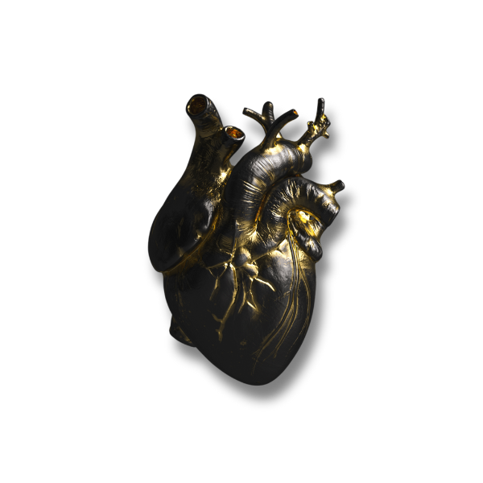
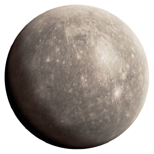
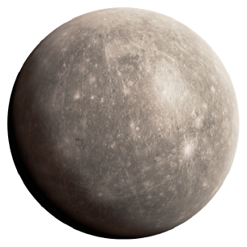
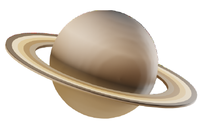

يَا مُنْزِلَ الآيَاتِ وَالْفُرْقَانِ * بَيْنِي وَبَيْنَكَ حُرْمَةُ الْقُرْآنِ
Oh Revealer of the Verses and the Criterion. Between You and I is the sanctity of the Quran.
اِشْرَحْ بِهِ صَدْرِي لِمَعْرِفَةِ الْهُدَى * وَاعْصِمْ بِهِ قَلْبِي مِنَ الشَّيْطَانِ
Open my chest with it to understand the guidance, and protect my heart with it from the Satan.
يَسِّرْ بِهِ أَمْرِي وَأَقْضِ مَآرِبِي * وَأَجِرْ بِهِ جَسَدِي مِنَ النِّيرَانِ
Ease my affairs with it and settle my needs, and save my body with it from the fire.
وَاحْطُطْ بِهِ وِزْرِي وَأَخْلِصْ نِيَّتِي * وَاشْدُدْ بِهِ أَزْرِي وَأَصْلِحْ شَانِي
And lighten with it my load and purify my intention, and increase with it my strength and rectify my state.
وَاكْشِفْ بِهِ ضُرِّي وَحَقِّقْ تَوْبَتِي * وَارْبِحْ بِهِ بَيْعِي بِلَا خُسْرَانِ
And remove with it my harm and accept my repentance, and make me profit from my pledge with it without any loss.
طَهِّرْ بِهِ قَلْبِي وَصَفِّ سَرِيرَتِي * أَجْمِلْ بِهِ ذِكْرِي وَأَعْلِ مَكَانِي
Cleanse my heart with it and purify my mind. Beautify my reputation with it and raise my rank.
وَاقْطَعْ بِهِ طَمَعِي وَشَرِّفْ هِمَّتِي * كَثِّرْ بِهِ وَرَعِي وَأَحْيِ جَنَانِي
Cut off my greed with it, and honour my ambitions. Increase my piety with it and give life to my heart.
أَسْهِرْ بِهِ لَيْلِي وَأَظْمِ جَوَارِحِي * أَسْبِلْ بِفَيْضِ دُمُوعِهَا أَجْفَانِي
Pass my night with it and make my limbs thirsty. Soak my eyelashes with the abundance of its tears.
اِمْزِجْهُ يَا رَبِّي بِلَحْمِي مَعْ دَمِي * وَاغْسِلْ بِهِ قَلْبِي مِنَ الأَضْغَانِ
Mix it, oh my Lord, with my flesh and blood, and wash my heart with it from grudges.
أَنْتَ الَّذِي صَوَّرْتَنِي وَخَلَقْتَنِي * وَهَدَيْتَنِي لِشَرَائِعِ الإِيمَانِ
You are the one who fashioned me and created me, and guided me to the laws of faith.
أَنْتَ الَّذِي عَلَّمْتَنِي وَرَحِمْتَنِي * وَجَعَلْتَ صَدْرِي وَاعِيَ الْقُرْآنِ
You are the one who taught me and had mercy on me, and made my chest conscious of the Quran.
أَنْتَ الَّذِي أَطْعَمْتَنِي وَسَقَيْتَنِي * مِنْ غَيْرِ كَسْبِ يَدٍ وَلَا دُكَّانِ
You are the one who fed me and gave me drink without me earning it by hand or via trade.
وَجَبَرْتَنِي وَسَتَرْتَنِي وَنَصَرْتَنِي * وَغَمَرْتَنِي بِالْفَضْلِ وَالإِحْسَانِ
And You restored me, covered me and aided me, and enveloped me in grace and goodness.
أَنْتَ الَّذِي آوَيْتَنِي وَحَبَوْتَنِي * وَهَدَيْتَنِي مِنْ حَيْرَةِ الْخِذْلَانِ
You are the one who gave me refuge and awarded me, and guided me from the confusion of disappointment.
وَزَرَعْتَ لِي بَيْنَ الْقُلُوبِ مَوَدَّةً * وَالْعَطْفَ مِنْكَ بِرَحْمَةٍ وَحَنَانِ
And you have planted love for me between the hearts, and the grace from you with mercy and affection.
وَنَشَرْتَ لِي فِي الْعَالَمِينَ مَحَاسِنًا * وَسَتَرْتَ عَنْ أَبْصَارِهِمْ عِصْيَانِي
And you have spread goodness out for me amongst the people, and you have hidden my sins from their eyes.
وَجَعَلْتَ ذِكْرِي فِي الْبَرِيَّةِ شَائِعًا * حَتَّى جَعَلْتَ جَمِيعَهُمْ إِخْوَانِي
And you have made my reputation amongst the people widespread until you made them all my brothers.
وَاللَّهِ لَوْ عَلِمُوا قَبِيحَ سَرِيرَتِي * لَأَبَى السَّلَامَ عَلَيَّ مَنْ يَلْقَانِي
By Allah, if they knew the ugliness of my inner self, whoever met me would refuse to greet me.
وَلَأَعْرَضُوا عَنِّي وَمَلُّوا صُحْبَتِي * وَلَبُؤْتُ بَعْدَ كَرَامَةٍ بِهَوَانِ
And they would turn away from me and be fed up with my friendship, and I would draw disgrace on myself after honour.
لَكِنْ سَتَرْتَ مَعَايِبِي وَمَثَالِبِي * وَحَلِمْتَ عَنْ سَقَطِي وَعَنْ طُغْيَانِي
But you covered my faults and flaws, and you bore my errors and my transgression.
فَلَكَ الْمَحَامِدُ وَالْمَدَائِحُ كُلُّهَا * بِخَوَاطِرِي وَجَوَارِحِي وَلِسَانِي
So all praises and thanks belong to you with my thoughts, my limbs and my tongue.
وَلَقَدْ مَنَنْتَ عَلَيَّ رَبِّ بِأَنْعُمٍ * مَا لِي بِشُكْرِ أَقَلِّهِنَّ يَدَانِ
You have indeed, Oh Lord, bestowed upon me blessings. The smallest of which I am unable give thanks for.
فَوَحَقِّ حِكْمَتِكَ الَّتِي آتَيْتَنِي * حَتَّى شَدَدتَّ بِنُورِهَا بُرْهَانِي
So by the truth of your wisdom which you have given me until You strengthened my argument with its light.
لَئِنِ اجْتَبَتْنِي مِنْ رِضَاكَ مَعُونَةٌ * حَتَّى تُقَوِّيَ أَيْدُهَا إِيمَانِي
If, from Your Pleasure, I were to be selected by your aid until its power strengthened my faith.
لَأُسَبِّحَنَّكَ بُكْرَةً وَعَشِيَّةً * وَلَتَخْدُمَنَّكَ فِي الدُّجَى أَرْكَانِي
[Then] surely, I will praise you day and night, And my limbs will serve you in the darkest parts of the night.
وَلَأَذْكُرَنَّكَ قَائِمًا أَوْ قَاعِدًا * وَلَأَشْكُرَنَّكَ سَائِرَ الأَحْيَانِ
And I will indeed remember you whether I’m standing or sitting, and I will be thanking you the rest of the time.
وَلَأَكْتُمَنَّ عَنِ الْبَرِيَّةِ خَلَّتِي * وَلَأَشْكُوَنَّ إِلَيْكَ جَهْدَ زَمَانِي
And I shall hide my dire needs from the people, and I shall complain to you of my troubled times.
وَلَأَقْصِدَنَّكَ فِي جَمِيعِ حَوَائِجِي * مِنْ دُونِ قَصْدِ فُلَانَةٍ وَفُلَانِ
And I shall seek you in all of my needs without seeking so-and-so.
وَلَأَحْسِمَنَّ عَنِ الأَنَامِ مَطَامِعِي * بِحُسَامِ يَأْسٍ لَمْ تَشُبْهُ بَنَانِي
And I will surely sever my hopes from the people with the severance of despair never seen before.
وَلَأَجْعَلَنَّ رِضَاكَ أَكْبَرَ هِمَّتِي * وَلَأَضْرِبَنَّ مِنَ الْهَوَى شَيْطَانِي
And I shall make your pleasure to be my greatest ambition, and I shall indeed strike the devil out from my desires.
وَلَأَكْسُوَنَّ عُيُوبَ نَفْسِي بِالتُّقَى * وَلَأَقْبِضَنَّ عَنِ الْفُجُورِ عِنَانِي
And I shall clothe the defects of my soul with Taqwa (piety), and I will restrain my reins from wickedness.
وَلَأَمْنَعَنَّ النَّفْسَ عَنْ شَهَوَاتِهَا * وَلَأَجْعَلَنَّ الزُّهْدَ مِنْ أَعْوَانِي
And I will prevent my soul from its desires, and I will make Zuhd (asceticism) to be one of my supporters.
وَلَأَتْلُوَنَّ حُرُوفَ وَحْيِكَ فِي الدُّجَى * وَلَأُحْرِقَنَّ بِنُورِهِ شَيْطَانِي
And I shall indeed recite the letters of your revelation in the depths of the dark, and I will burn my devil with its light.
أَنْتَ الَّذِي يَا رَبِّ قُلْتَ حُرُوفَهُ * وَوَصَفْتَهُ بِالْوَعْظِ وَالتِّبْيَانِ
You are the one, oh my Lord, who uttered its letters, and you described it as an admonition and clarification.
وَنَظَمْتَهُ بِبَلَاغَةٍ أَزَلِيَّةٍ * تَكْيِيفُهَا يَخْفَى عَلَى الأَذْهَانِ
And you have constructed it with eternal eloquence, the manner of which is hidden from the minds.
وَكَتَبْتَ فِي اللَّوْحِ الْحَفِيظِ حُرُوفَهُ * مِنْ قَبْلِ خَلْقِ الْخَلْقِ فِي أَزْمَانِ
And you have written its letters in the preserved Tablet before the creation of all things aforetime.
فَاللَّهُ رَبِّي لَمْ يَزَلْ مُتَكَلِّمًا * حَقًّا إِذَا مَا شَاءَ ذُو إِحْسَانِ
So Allah, my Lord, has not ceased to speak. Indeed if he wills; owner of Great Generosity.
نَادَى بِصَوْتٍ حِينَ كَلَّمَ عَبْدَهُ * مُوسَى فَأَسْمَعَهُ بِلَا كِتْمَانِ
He called out with his voice when he called his servant, Moses; and so he caused him to hear without any obscurity.
وَكَذَا يُنَادِي فِي الْقِيَامَةِ رَبُّنَا * جَهْرًا فَيَسْمَعُ صَوْتَهُ الثَّقَلَانِ
And likewise our Lord shall call on the day of Resurrection loudly, and the Jinn and mankind shall hear him.
أَنْ يَا عِبَادِي أَنْصِتُوا لِي وَاسْمَعُوا * قَوْلَ الإِلَهِ الْمَالِكِ الدَّيَّانِ
That ‘Oh my servants, pay attention to me and listen to the word of God, the owner and the Judge!’
هَذَا حَدِيثُ نَبِيِّنَا عَنْ رَبِّهِ * صِدْقًا بِلَا كَذِبٍ وَلَا بُهْتَانِ
This is the speech of our Prophet about his Lord truthfully without any lie or falsehood.
لَسْنَا نُشَبِّهُ صَوْتَهُ بِكَلَامِنَا * إِذْ لَيْسَ يُدْرَكُ وَصْفُهُ بِعِيَانِ
We do not liken his voice to our speech, for his description cannot be understood by sight
لَا تَحْصُرُ الأَوْهَامُ مَبْلَغَ ذَاتِهِ * أَبَدًا وَلَا يَحْوِيهِ قُطْرُ مَكَانِ
Minds can never encompass the extent of his being, and no diameter of any place can contain him.
وَهُوَ الْمُحِيطُ بِكُلِّ شَيْءٍ عِلْمُهُ * مِنْ غَيْرِ إِغْفَالٍ وَلَا نِسْيَانِ
He is the one whose knowledge encompasses all things without heedlessness or forgetfulness.
مَنْ ذَا يُكَيِّفُ ذَاتَهُ وَصِفَاتِهِ * وَهُوَ الْقَدِيمُ مُكَوِّنُ الأَكْوَانِ
And who can attempt to describe his essence or his attributes, while he is the Pre-eternal, creator of all existence?
سُبْحَانَهُ مَلِكًا عَلَى الْعَرْشِ اسْتَوَى * وَحَوَى جَمِيعَ الْمُلْكِ وَالسُّلْطَانِ
Glory be to him, a King who rose over his Throne, encompassed all the dominion and authority.
وَكَلَامُهُ الْقُرْآنُ أَنْزَلَ آيَهُ * وَحْيًا عَلَى الْمَبْعُوثِ مِنْ عَدْنَانِ
And his speech is the Qur’an whose verses he has revealed as a revelation to the one sent from Adnan.
صَلَّى عَلَيْهِ اللَّهُ خَيْرَ صَلَاتِهِ * مَا لَاحَ فِي فَلَكَيْهِمَا الْقَمَرَانِ
May Allah send upon him his best blessings for as long as the sun and the moon remain in their orbits.
هُوَ جَاءَ بِالْقُرْآنِ مِنْ عِنْدِ الَّذِي * لَا تَعْتَرِيهِ نَوَائِبُ الْحَدَثَانِ
He came with the Qur’an from the one who cannot be affected by the misfortunes of time.
تَنْزِيلُ رَبِّ الْعَالَمِينَ وَوَحْيُهُ * بِشَهَادَةِ الأَحْبَارِ وَالرُّهْبَانِ
It is the Revelation of the Lord of the worlds with the testimony of the Rabbis and Priests.
وَكَلَامُ رَبِّي لَا يَجِيءُ بِمِثْلِهِ * أَحَدٌ وَلَوْ جُمِعَتْ لَهُ الثَّقَلَانِ
And the speech of my Lord, none can bring like it, even if Man and Jinn were to come together to achieve that.
وَهُوَ الْمَصُونُ مِنَ الأَبَاطِلِ كُلِّهَا * وَمِنَ الزِّيَادَةِ فِيهِ وَالنُّقْصَانِ
And it is protected from every single falsehood, and from addition to it and subtraction from it.
مَنْ كَانَ يَزْعُمُ أَنْ يُبَارِيَ نَظْمَهُ * وَيَرَاهُ مِثْلَ الشِّعْرِ وَالْهَذَيَانِ
Whoever claims that he can challenge its construction, and sees it to be like poetry or senseless chatter.
فَلْيَأْتِ مِنْهُ بِسُورَةٍ أَوْ آيَةٍ * فَإِذَا رَأَى النَّظْمَيْنِ يَشْتَبِهَانِ
Then let him bring a single chapter or verse of his own, and if he sees the two constructions to be similar...
فَلْيَنْفَرِدْ بِاسْمِ الأُلُوهَةِ وَلْيَكُنْ * رَبَّ الْبَرِيَّةِ وَلْيَقُلْ سُبْحَانِي
Then let him single himself out with the divine name and let him be the Lord of people, and let him say: ‘Glory to me!’
فَإِذَا تَنَاقَضَ نَظْمُهُ فَلْيَلْبَسَنْ * ثَوْبَ النَّقِيصَةِ صَاغِرًا بِهَوَانِ
But if his construction is different, then let him wear the garments of failure, belittled by humiliation.
أَوْ فَلْيُقِرَّ بِأَنَّهُ تَنْزِيلُ مَنْ * سَمَّاهُ فِي نَصِّ الْكِتَابِ مَثَانِي
Or let him admit that it is the Revelation of the one who named it ‘Mathani’ (Oft-repeated) in the Book.
لَا رَيْبَ فِيهِ بِأَنَّهُ تَنْزِيلُهُ * وَبِدَايَةُ التَّنْزِيلِ فِي رَمَضَانِ
There is no doubt that it is his Revelation, and the start of the Revelation began in Ramadan.
اللَّهُ فَصَّلَهُ وَأَحْكَمَ آيَهُ * وَتَلَاهُ تَنْزِيلًا بِلَا أَلْحَانِ
Allah explained it in detail and clarified its verses, and recited it as a Revelation without any mistakes.
هُوَ قَوْلُهُ وَكَلَامُهُ وَخِطَابُهُ * بِفَصَاحَةٍ وَبَلَاغَةٍ وَبَيَانِ
It is his word, and his speech, and his addressing with eloquence, articulacy, and clarity.
هُوَ حُكْمُهُ هُوَ عِلْمُهُ هُوَ نُورُهُ * وَصِرَاطُهُ الْهَادِي إِلَى الرِّضْوَانِ
It is his Judgement, it is his Knowledge, it is his Light, and his Path which guides to his approval.
جَمَعَ الْعُلُومَ دَقِيقَهَا وَجَلِيلَهَا * فَبِهِ يَصُولُ الْعَالِمُ الرَّبَّانِي
[In it] He gathered all Sciences; the subtle and the great, and [hence] the righteous scholar delves into them.
قَصَصٌ عَلَى خَيْرِ الْبَرِيَّةِ قَصَّهُ * رَبِّي فَأَحْسَنَ أَيَّمَا إِحْسَانِ
[What great] stories he narrated to the best of creation (the Prophet). My Lord [narrated them], and in perfection did he do so.
وَأَبَانَ فِيهِ حَلَالَهُ وَحَرَامَهُ * وَنَهَى عَنِ الآثَامِ وَالْعِصْيَانِ
And he clarified his halal and his haram in it, and he forbade from all sins and disobedience.
مَنْ قَالَ إِنَّ اللَّهَ خَالِقُ قَوْلِهِ * فَقَدِ اسْتَحَلَّ عِبَادَةَ الأَوْثَانِ
Whoever says that Allah is the creator of his word, then he has made worshiping idols lawful.
مَنْ قَالَ فِيهِ عِبَارَةٌ وَحِكَايَةٌ * فَغَدًا يُجَرَّعُ مِنْ حَمِيمٍ آنِ
Whoever says [the Quran] is a narration or expression [of what he said], then tomorrow he will be forced to drink from the boiling water.
مَنْ قَالَ إِنَّ حُرُوفَهُ مَخْلُوقَةٌ * فَالْعَنْهُ ثُمَّ اهْجُرْهُ كُلَّ أَوَانِ
Whoever says that its letters are created, then curse him and abandon him at all times.
لَا تَلْقَ مُبْتَدِعًا وَلَا مُتَزَنْدِقًا * إِلَّا بِعَبْسَةِ مَالِكِ الْغَضْبَانِ
Do not meet any innovator or a heretic except with the frown of the angry Maalik (Guardian of Hell-fire).
وَالْوَقْفُ فِي الْقُرْآنِ خُبْثٌ بَاطِلٌ * وَخِدَاعُ كُلِّ مُذَبْذَبٍ حَيْرَانِ
And Waqf (skepticism about it being created or uncreated) about the Quran is a false wickedness, and it is the deceiving of every confused skeptic.
قُلْ غَيْرُ مَخْلُوقٍ كَلَامُ إِلَهِنَا * وَاعْجَلْ وَلَا تَكُ فِي الإِجَابَةِ وَانِي
Say uncreated is the speech of our God, and hasten and do not be slack in answering.
أَهْلُ الشَّرِيعَةِ أَيْقَنُوا بِنُزُولِهِ * وَالْقَائِلُونَ بِخَلْقِهِ شَكْلَانِ
The people of Sharia gained certainty of its revelation, and those who say that it’s created are two types.
وَتَجَنَّبِ اللَّفْظَيْنِ إِنَّ كِلَيْهِمَا * وَمَقَالُ جَهْمٍ عِنْدَنَا سِيَّانِ
And stay away from both of the terms for both of them, and the saying of the Jahmis are the same to us.
يَا أَيُّهَا السُّنِّيُّ خُذْ بِوَصِيَّتِي * وَاخْصُصْ بِذَلِكَ جُمْلَةَ الإِخْوَانِ
Oh sunni, take my advice, and dedicate this to a group of your brothers.
وَاقْبَلْ وَصِيَّةَ مُشْفِقٍ مُتَوَدِّدٍ * وَاسْمَعْ بِفَهْمٍ حَاضِرٍ يَقْظَانِ
And accept the advice of a kind-hearted and compassionate one, and listen with a present and awake understanding.
كُنْ فِي أُمُورِكَ كُلِّهَا مُتَوَسِّطًا * عَدْلًا بِلَا نَقْصٍ وَلَا رُجْحَانِ
Be in all of your matters moderate and just, without any shortage or bias.
وَاعْلَمْ بِأَنَّ اللَّهَ رَبٌّ وَاحِدٌ * مُتَنَزِّهٌ عَنْ ثَالِثٍ أَوْ ثَانِ
And know that Allah is a single Lord, transcendent from being three or two.
الأَوَّلُ الْمُبْدِي بِغَيْرِ بِدَايَةٍ * وَالآخِرُ الْمُفْنِي وَلَيْسَ بِفَانِ
The First, the Originator without a beginning, and the Last, the Annihilator, yet he does not perish.
وَكَلَامُهُ صِفَةٌ لَهُ وَجَلَالُهُ * مِنْهُ بِلَا أَمَدٍ وَلَا حِدْثَانِ
And his speech is an attribute to him and his glory from him without any duration or beginning.
رُكْنُ الدِّيَانَةِ أَنْ تُصَدِّقَ بِالْقَضَا * لَا خَيْرَ فِي بَيْتٍ بِلَا أَرْكَانِ
A pillar of religion is to believe in Qadha (divine decree). There is no good in a house without pillars.
اللَّهُ قَدْ عَلِمَ السَّعَادَةَ وَالشَّقَا * وَهُمَا وَمَنْزِلَتَاهُمَا ضِدَّانِ
Allah already knows the happiness or misery. [He already knows whether a person will go to hell or paradise], and they both and their positions are opposites
لَا يَمْلِكُ الْعَبْدُ الضَّعِيفُ لِنَفْسِهِ * رُشْدًا وَلَا يَقْدِرْ عَلَى خِذْلَانِ
A weak servant does not possess for himself any guidance and he can not prevent being forsaken.
سُبْحَانَ مَنْ يُجْرِي الأُمُورَ بِحِكْمَةٍ * فِي الْخَلْقِ بِالأَرْزَاقِ وَالْحِرْمَانِ
Glory be to the one who manages affairs with wisdom in the creation, with provision and deprivation.
نَفَذَتْ مَشِيئَتُهُ بِسَابِقِ عِلْمِهِ * فِي خَلْقِهِ عَدْلًا بِلَا عُدْوَانِ
His will was executed with the precedence of his knowledge in his creation, justly without oppression.
وَالْكُلُّ فِي أُمِّ الْكِتَابِ مُسَطَّرٌ * مِنْ غَيْرِ إِغْفَالٍ وَلَا نُقْصَانِ
And all of it is written in the mother of the book without heedlessness or deficiency.
فَاقْصِدْ هُدِيتَ وَلَا تَكُنْ مُتَغَالِيًا * إِنَّ الْقُدُورَ تَفُورُ بِالْغَلَيَانِ
So seek; may you be guided, and do not be excessive. Indeed, pots overflow when boiling.
دِنْ بِالشَّرِيعَةِ وَالْكِتَابِ كِلَيْهِمَا * فَكِلَاهُمَا لِلدِّينِ وَاسِطَتَانِ
Adhere to both the Sharia and the Book (Quran), for both of them are intermediaries to the religion.
وَكَذَا الشَّرِيعَةُ وَالْكِتَابُ كِلَاهُمَا * بِجَمِيعِ مَا تَأْتِيهِ مُحْتَفِظَانِ
Likewise, the Sharia and the Book, both of them safeguard all that it (religion) brings.
وَلِكُلِّ عَبْدٍ حَافِظَانِ لِكُلِّ مَا * يَقَعُ الْجَزَاءُ عَلَيْهِ مَخْلُوقَانِ
And for every servant, there are two guardians over all that will be recompensed, they are created.
أُمِرَا بِكَتْبِ كَلَامِهِ وَفِعَالِهِ * وَهُمَا لِأَمْرِ اللَّهِ مُؤْتَمِرَانِ
They are commanded to record his words and actions, and they both are obedient to the command of Allah.
وَاللَّهُ صِدْقٌ وَعْدُهُ وَوَعِيدُهُ * مِمَّا يُعَايِنُ شَخْصَهُ الْعَيْنَانِ
And Allah's promise and threat are true from what the eyes see of his essence.
وَاللَّهُ أَكْبَرُ أَنْ تُحَدَّ صِفَاتُهُ * أَوْ أَنْ يُقَاسَ بِجُمْلَةِ الأَعْيَانِ
And Allah is too great for his attributes to be limited or to be compared to any created beings.
وَحَيَاتُنَا فِي الْقَبْرِ بَعْدَ مَمَاتِنَا * حَقٌّ وَيَسْأَلُنَا بِهِ الْمَلَكَانِ
And our life in the grave after our death is true and the two angels will ask us about it.
وَالْقَبْرُ صَحَّ نَعِيمُهُ وَعَذَابُهُ * وَكِلَاهُمَا لِلنَّاسِ مُدَّخَرَانِ
And the grave truly contains both its pleasures and its torments, and both are reserved for mankind.
وَالْبَعْثُ بَعْدَ الْمَوْتِ وَعْدٌ صَادِقٌ * بِإِعَادَةِ الأَرْوَاحِ فِي الأَبْدَانِ
And resurrection after death is a true promise with the restoration of the souls into the bodies.
وَصِرَاطُنَا حَقٌّ وَحَوْضُ نَبِيِّنَا * صِدْقٌ لَهُ عَدَدُ النُّجُومِ أَوَانِي
Our path is true and the Hawdh (lake) of our Prophet is true, with vessels as many as the number of stars.
يُسْقَى بِهَا السُّنِّيُّ أَعْذَبَ شَرْبَةٍ * وَيُذَادُ كُلُّ مُخَالِفٍ فَتَّانِ
From which the Sunni will be given the sweetest drink, and every opposing mischief-maker will be driven away [to hell-fire].
وَكَذَلِكَ الأَعْمَالُ يَوْمَئِذٍ تُرَى * مَوْضُوعَةً فِي كَفَّةِ الْمِيزَانِ
And likewise, the deeds on that day will be seen placed on the scale.
وَالْكُتْبُ يَوْمَئِذٍ تَطَايَرُ فِي الْوَرَى * بِشَمَائِلِ الأَيْدِي وَبِالأَيْمَانِ
And the records on that day will be scattered among the people on the left or on the right hands.
وَاللَّهُ يَوْمَئِذٍ يَجِيءُ لِعَرْضِنَا * مَعَ أَنَّهُ فِي كُلِّ وَقْتٍ دَانِ
And on that day, Allah will come to judge us, although he is always nearby.
وَالأَشْعَرِيُّ يَقُولُ يَأْتِي أَمْرُهُ * وَيَعِيبُ وَصْفَ اللَّهِ بِالإِتْيَانِ
And the Ashari says his order comes, and finds it wrong to describe Allah with [the verb] coming.
وَاللَّهُ فِي الْقُرْآنِ أَخْبَرَ أَنَّهُ * يَأْتِي بِغَيْرِ تَنَقُّلٍ وَتَدَانِ
And Allah in the Quran has informed that he comes without transportation or approaching.
وَعَلَيْهِ عَرْضُ الْخَلْقِ يَوْمَ مَعَادِهِمْ * لِلْحُكْمِ كَيْ يَتَنَاصَفَ الْخَصْمَانِ
And upon him is the presentation of all creation on the Day of their return for judgment so that the two adversaries may be justly examined
وَاللَّهُ يَوْمَئِذٍ نَرَاهُ كَمَا نَرَى * قَمَرًا بَدَا لِلسِّتِّ بَعْدَ ثَمَانِ
On that day, we shall see Allah as we see a moon that appears for six [days] after eight.
يَوْمُ الْقِيَامَةِ لَوْ عَلِمْتَ بِهَوْلِهِ * لَفَرَرْتَ مِنْ أَهْلٍ وَمِنْ أَوْطَانِ
The Day of Judgment, if you [only] knew of its enormity, you would flee from [your] family and homeland.
يَوْمٌ تَشَقَّقَتِ السَّمَاءُ لِهَوْلِهِ * وَتَشِيبُ فِيهِ مَفَارِقُ الْوِلْدَانِ
A day when the sky splits apart due to its enormity, and in it, the heads of children will turn grey.
يَوْمٌ عَبُوسٌ قَمْطَرِيرٌ شَرُّهُ * فِي الْخَلْقِ مُنْتَشِرٌ عَظِيمُ الشَّانِ
A harsh day in which there is great evil, scattered throughout creation, with magnificent grandeur.
وَالْجَنَّةُ الْعُلْيَا وَنَارُ جَهَنَّمٍ * دَارَانِ لِلْخَصْمَيْنِ دَائِمَتَانِ
And the lofty Paradise and the Fire of Hell are two eternal abodes for the two adversaries.
يَوْمٌ يَجِيءُ الْمُتَّقُونَ لِرَبِّهِمْ * وَفْدًا عَلَى نُجُبٍ مِنَ الْعِقْيَانِ
A day when the righteous will come to their Lord in delegations, on pure gold.
وَيَجِيءُ فِيهِ الْمُجْرِمُونَ إِلَى لَظَى * يَتَلَمَّظُونَ تَلَمُّظَ الْعَطْشَانِ
And in it, shall the criminals come to the Scorching Fire. They will smack their lips like the smacking of the thirsty.
وَدُخُولُ بَعْضِ الْمُسْلِمِينَ جَهَنَّمٍ * بِكَبَائِرِ الآثَامِ وَالطُّغْيَانِ
And the entering of some Muslims into Hell-fire, because of major sins and tyranny.
وَاللَّهُ يَرْحَمُهُمْ بِصِحَّةِ عَقْدِهِمْ * وَيُبَدَّلُوا مِنْ خَوْفِهِمْ بِأَمَانِ
And Allah will have mercy on them because of their right beliefs, and they will be exchanged with assurance after fear.
وَشَفِيعُهُمْ عِنْدَ الْخُرُوجِ مُحَمَّدٌ * وَطُهُورُهُمْ فِي شَاطِئِ الْحَيَوَانِ
And their intercessor when exiting [the Hell-fire] is Mohammad, and their purification will be in the river of Al-Hayawan.
حَتَّى إِذَا طَهُرُوا هُنَالِكَ أُدْخِلُوا * جَنَّاتِ عَدْنٍ وَهْيَ خَيْرُ جِنَانِ
Until they are purified there, then they will be admitted into the gardens of Eden and they are the best gardens.
فَاللَّهُ يَجْمَعُنَا وَإِيَّاهُمْ بِهَا * مِنْ غَيْرِ تَعْذِيبٍ وَغَيْرِ هَوَانِ
So may Allah gather us and them in it without punishment and without disgrace.
وَإِذَا دُعِيتَ إِلَى أَدَاءِ فَرِيضَةٍ * فَانْشَطْ وَلَا تَكُ فِي الإِجَابَةِ وَانِي
And when you are called to perform an obligation, be vigorous and don’t be slack in answering.
قُمْ بِالصَّلَاةِ الْخَمْسِ وَاعْرِفْ قَدْرَهَا * فَلَهُنَّ عِنْدَ اللَّهِ أَعْظَمُ شَانِ
Perform the five prayers and know their value, for in the sight of Allah, they have the greatest significance.
لَا تَمْنَعَنَّ زَكَاةَ مَالِكَ ظَالِمًا * فَصَلَاتُنَا وَزَكَاتُنَا أُخْتَانِ
Do not withhold the payment of your wealth's Zakat wrongfully, for our prayer and our Zakah are sisters.
وَالوَِتْرُ بَعْدَ الْفَرْضِ آكَدُ سُنَّةٍ * وَالْجُمْعَةُ الزَّهْرَاءِ وَالْعِيدَانِ
And the Witr [prayer] is the most recommended sunnah after fard [prayers], and the luminous Jummah and the two Eids.
مَعَ كُلِّ بِرٍّ صَلِّهَا أَوْ فَاجِرٍ * مَا لَمْ يَكُنْ فِي دِينِهِ بِمُشَانِ
With any righteous person, pray it or with a wicked one as long as he is not faulty in his religion.
وَصِيَامُنَا رَمَضَانَ فَرْضٌ وَاجِبٌ * وَقِيَامُنَا الْمَسْنُونُ فِي رَمَضَانِ
And our fasting in Ramadan is a compulsory obligation, and our Qiyam is sunnah in Ramadan.
صَلَّى النَّبِيُّ بِهِ ثَلَاثًا رَغْبَةً * وَرَوَى الْجَمَاعَةُ أَنَّهَا ثِنْتَانِ
The Prophet prayed it three [nights] eagerly, and an assembly reported that it was two.
إِنَّ التَّرَاوِحَ رَاحَةٌ فِي لَيْلِهِ * وَنَشَاطُ كُلِّ عُوَيْجِزٍ كَسْلَانِ
Indeed, Taraweeh was a comfort in his night and a burden for every sluggish and lazy one.
وَاللَّهِ مَا جَعَلَ التَّرَاوِحَ مُنْكَرًا * إِلَّا الْمَجُوسُ وَشِيعَةُ الصُّلْبَانِ
By Allah, no one made Taraweeh munkar, except the Magians and the group of crucifixes
وَالْحَجُّ مْفْتَرَضٌ عَلَيْكَ وَشَرْطُهُ * أَمْنُ الطَّرِيقِ وَصِحَّةُ الأَبْدَانِ
And the Hajj is obligatory upon you, and its condition is the safety of the way and the health of the bodies.
كَبِّرْ هُدِيتَ عَلَى الْجَنَائِزِ أَرْبَعًا * وَاسْأَلْ لَهَا بِالْعَفْوِ وَالْغُفْرَانِ
Make Takbir four times, may you be guided, over the Jinazah, and ask for its forgiveness and pardon.
إِنَّ الصَّلَاةَ عَلَى الْجَنَائِزِ عِنْدَنَا * فَرْضُ الْكِفَايَةِ لَا عَلَى الأَعْيَانِ
Indeed, the prayer over the Jinazah for us is fard Al-Kifayah, not upon everyone.
إِنَّ الأَهِلَّةَ لِلأَنَامِ مَوَاقِتٌ * وَبِهَا يَقُومُ حِسَابُ كُلِّ زَمَانِ
Indeed, the crescents are measurements for people, and by them, the accounting of every period is measured.
لَا تُفْطِرَنَّ وَلَا تَصُمْ حَتَّى يَرَى * شَخْصَ الْهِلَالِ مِنَ الْوَرَى إِثْنَانِ
Do not break your fast, nor observe fasting until two people witness the crescent moon.
مُتَثَبِّتَانِ عَلَى الَّذِي يَرَيَانِهِ * حُرَّانِ فِي نَقْلَيْهِمَا ثِقَتَانِ
Two confident people on what they see. Two free people who are trustworthy in their transmission.
لَا تَقْصِدَنَّ لِيَوْمِ شَكٍّ عَامِدًا * فَتَصُومَهُ وَتَقُولَ مِنْ رَمَضَانِ
Do not deliberately aim for a doubtful day, lest you fast it and consider it from Ramadan.
لَا تَعْتَقِدْ دِينَ الرَّوَافِضِ إِنَّهُمْ * أَهْلُ الْمُحَالِ وَحِزْبَةُ الشَّيْطَانِ
Do not believe in the religion of Rawafidh for they are people of illogicality and the group of Satan.
جَعَلُوا الشُّهُورَ عَلَى قِيَاسِ حِسَابِهِمْ * وَلَرُبَّمَا كَمُلَا لَنَا شَهْرَانِ
They have assigned the months according to their own calculations, and perhaps for us two months have been completed.
وَلَرُبَّمَا نَقَصَ الَّذِي هُوَ عِنْدَهُمْ * وَافٍ وَأَوْفَى صَاحِبُ النُّقْصَانِ
And perhaps [their month] has fallen short sufficiently, and the one with deficiency exceeded.
إِنَّ الرَّوَافِضَ شَرُّ مَنْ وَطِئَ الْحَصَا * مِنْ كُلِّ إِنْسٍ نَاطِقٍ أَوْ جَانِ
Indeed, the Rawafidh are the worst people who step on earth from every speaking man or jinn.
مَدَحُوا النَّبِيَّ وَخَوَّنُوا أَصْحَابَهُ * وَرَمَوْهُمُ بِالظُّلْمِ وَالْعُدْوَانِ
They praised the prophet and regarded his companions as traitors, and accused them of wrong-doing and aggression.
حَبُّوا قَرَابَتَهُ وَسَبُّوا صَحْبَهُ * جَدَلَانِ عِنْدَ اللَّهِ مُنْتَقِضَانِ
They loved his kin, but cursed his companions. Two arguments that are contradictory in the sight of Allah.
فَكَأَنَّمَا آلُ النَّبِيِّ وَصَحْبُهُ * رُوحٌ يَضُمُّ جَمِيعَهَا جَسَدَانِ
For it is as though the family of the prophet and his companions are One soul enveloped by two bodies.
فِئَتَانِ عَقْدُهُمَا شَرِيعَةُ أَحْمَدٍ * بِأَبِي وَأُمِّي ذَانِكَ الْفِئَتَانِ
Two parties whose covenant is the Shariah of Ahmad. May my father and mother be sacrificed for these two parties.
فِئَتَانِ سَالِكَتَانِ فِي سُبُلِ الْهُدَى * وَهُمَا بِدِينِ اللَّهِ قَائِمَتَانِ
Two parties adhering to the paths of guidance, and they both uphold the religion of Allah.
قُلْ إِنَّ خَيْرَ الأَنْبِيَاءِ مُحَمَّدٌ * وَأَجَلَّ مَنْ يَمْشِي عَلَى الْكُثْبَانِ
Say, “The best of the prophets is Mohammad, and the greatest person to walk on earth.”
وَأَجَلَّ صَحْبِ الرُّسْلِ صَحْبُ مُحَمَّدٍ * وَكَذَاكَ أَفْضَلُ صَحْبِهِ الْعُمَرَانِ
And the greatest companions of messengers are the companions of Mohammad, and likewise, his best companions are Abu Bakr and Umar.
رَجُلَانِ قَدْ خُلِقَا لِنَصْرِ مُحَمَّدٍ * بِدَمِي وَنَفْسِي ذَانِكَ الرَّجُلَانِ
Two men who were created to assist Mohammad. May my blood and soul be sacrificed for these two men.
فَهُمَا اللَّذَانِ تَظَاهَرَا لِنَبِيِّنَا * فِي نَصْرِهِ وَهُمَا لَهُ صِهْرَانِ
For they were the ones who supported our prophet in his victory, and they were father-in-laws to him.
بِنْتَاهُمَا أَسْنَى نِسَاءِ نَبِيِّنَا * وَهُمَا لَهُ بِالْوَحْيِ صَاحِبَتَانِ
Their daughters were the highest wives of our prophet, and both of them accompanied him during the revelation.
أَبَوَاهُمَا أَسْنَى صَحَابَةِ أَحْمَدٍ * يَا حَبَّذَا الأَبَوَانِ وَالْبِنْتَانِ
Their fathers were the highest companions of Ahmad. What great fathers and great daughters they were!
وَهُمَا وَزِيرَاهُ اللَّذَانِ هُمَا هُمَا * لِفَضَائِلِ الأَعْمَالِ مُسْتَبِقَانِ
And they were his two ministers who were racing one another to do the best of deeds.
وَهُمَا لأَحْمَدَ نَاظِرَاهُ وَسَمْعُهُ * وَبِقُرْبِهِ فِي الْقَبْرِ مُضْطَجِعَانِ
And they were for Ahmad, his eyes and his ears, and because of their closeness to him, they are lying down next to him in grave.
كَانَا عَلَى الإِسْلَامِ أَشْفَقَ أَهْلِهِ * وَهُمَا لِدِينِ مُحَمَّدٍ جَبَلَانِ
They cared the most about Islam among its people, and they were two mountains for the religion of Mohammad.
أَصْفَاهُمَا أَقْوَاهُمَا أَخْشَاهُمَا * أَتْقَاهُمَا فِي السِّرِّ وَالإِعْلَانِ
[Out of the two, one is] The chosen, the firmest, the most humble, and the most pious in both secret and in public.
أَسْنَاهُمَا أَزْكَاهُمَا أَعْلَاهُمَا * أَوْفَاهُمَا فِي الْوَزْنِ وَالرُّجْحَانِ
The grandest, the purest, the highest, the most fulfilling in weight (on the Day of Judgement) and in excellence.
صِدِّيقُ أَحْمَدَ صَاحِبُ الْغَارِ الَّذِي * هُوَ فِي الْمَغَارَةِ وَالنَّبِيُّ اثْنَانِ
Seddiq of Ahmad, the companion of the cave who was in the cave and the prophet was the second.
أَعْنِي أَبَا بَكْرِ الَّذِي لَمْ يَخْتَلِفْ * مِنْ شَرْعِنَا فِي فَضْلِهِ رَجُلَانِ
I mean Abu Bakr, the one about whom no two men disputed over his virtue in our Religion.
هُوَ شَيْخُ أَصْحَابِ النَّبِيِّ وَخَيْرُهُمْ * وَإِمَامُهُمْ حَقًّا بِلَا بُطْلَانِ
He is the Sheikh of the prophet’s companions and the best of them, and their Imam truly without any falsehood.
وَأَبُو الْمُطَهَّرِةِ الَّتِي تَنْزِيهُهَا * قَدْ جَاءَنَا فِي النُّورِ وَالْفُرْقَانِ
And the father of the pure one (Aishah) whose exoneration came to us in [Surah] Al-Noor and the Furqan.
أَكْرِمْ بِعَائِشَةَ الرِّضَا مِنْ حُرَّةٍ * بِكْرٍ مُطَهَّرَةِ الإِزَارِ حَصَانِ
Honour Aishah, the approved one among the free women, a virgin, pure-garmented, and the chaste one.
هِيَ زَوْجُ خَيْرِ الأَنْبِيَاءِ وَبِكْرُهُ * وَعَرُوسُهُ مِنْ جُمْلَةِ النِّسْوَانِ
She is the wife of the best of the prophets and his virgin, and his bride from among the women.
هِيَ عِرْسُهُ هِيَ أُنْسُهُ هِيَ إِلْفُهُ * هِيَ حِبُّهُ صِدْقًا بِلَا أَدْهَانِ
She is his spouse, his companion, and his confidant. She is his beloved truly with no blemish.
أَوَلَيْسَ وَالِدُهَا يُصَافِي بَعْلَهَا * وَهُمَا بِرُوحِ اللَّهِ مُؤْتَلِفَانِ
Was her father not devoted to her husband, and they, through the mercy of Allah, were united with one another.
لَمَّا قَضَى صِدِّيقُ أَحْمَدَ نَحْبَهُ * دَفَعَ الْخِلَافَةَ لِلإِمَامِ الثَّانِي
When Seddiq of Ahmad fulfilled his vow [to the death], he transferred the caliphate to the second Imam.
أَعْنِي بِهِ الْفَارُوقَ فَرَّقَ عَنْوَةً * بِالسَّيْفِ بَيْنَ الْكُفْرِ وَالإِيمَانِ
I mean Al-Farooq who distinguished valorously with the sword between Kufr and Iman [faith and disbelief].
هُوَ أَظْهَرَ الإِسْلَامَ بَعْدَ خَفَائِهِ * وَمَحَا الظَّلَامَ وَبَاحَ بِالْكِتْمَانِ
He made Islam evident after its concealment, and he erased the darkness and uncovered the concealment.
وَمَضَى وَخَلَّى الأَمْرَ شُورَى بَيْنَهُمْ * فِي الأَمْرِ فَاجْتَمَعُوا عَلَى عُثْمَانِ
And he passed, leaving the matter to consultation among them about the matter, so they agreed upon Uthman.
مَنْ كَانَ يَسْهَرُ لَيْلَهُ فِي رَكْعَةٍ * وِتْرًا فَيُكْمِلُ خَتْمَةَ الْقُرْآنِ
Who used to spent his night in one witr rakaah, and he would finish the Quran.
وَلِيَ الْخِلَافَةَ صِهْرُ أَحْمَدَ بَعْدَهُ * أَعْنِي عَلِيَّ الْعَالِمَ الرَّبَّانِي
The successor to the caliphate was Ahmad's son-in-law after him. I mean Ali, the knowledgeable, the Righteous.
زَوْجَ الْبَتُولِ أَخَا الرَّسُولِ وَرُكْنَهُ * لَيْثَ الْحُرُوْبِ مُنَازِلَ الأَقْرَانِ
Husband of Al-Batool, brother of the Messenger and his pillar, lion of battles, duellist of his peers.
سُبْحَانَ مَنْ جَعَلَ الْخِلَافَةَ رُتْبَةً * وَبَنَى الإِمَامَةَ أَيَّمَا بُنْيَانِ
Glory be to him who made caliphate in ranks, and established Imamate with what an establishment.
وَاسْتَخْلَفَ الأَصْحَابَ كَيْ لَا يَدَّعِي * مِنْ بَعْدِ أَحْمَدَ فِي النُّبُوَّةِ ثَانِي
And He appointed the companions as successors so that no one after Ahmad (the Prophet Muhammad) would claim to be a second prophet.
أَكْرِمْ بِفَاطِمَةَ الْبَتُولِ وَبَعْلِهَا * وَبِمَنْ هُمَا لِمُحَمَّدٍ سِبْطَانِ
Honour Fatimah Al-Batool and her husband, and the two who were grandsons to Mohammad.
غُصْنَانِ أَصْلُهُمَا بِرَوْضَةِ أَحْمَدٍ * لِلَّهِ دَرُّ الأَصْلِ وَالْغُصْنَانِ
They are two branches whose roots are in the garden of Ahmad, for Allah is the springing out of the roots and the two branches.
أَكْرِمْ بِطَلْحَةَ وَالزُّبَيْرِ وَسَعْدِهِمْ * وَسَعِيدِهِمْ وَبِعَابِدِ الرَّحْمٰنِ
Honour Talhah, and Zubair and their Sa’d, and their Sa’eed and Abdurrahman.
وَأَبِي عُبَيْدَةَ ذِي الدِّيَانَةِ وَالتُّقَى * وَامْدَحْ جَمَاعَةَ بَيْعَةِ الرِّضْوَانِ
And Abu Ubaidah, the one of religion and piety, and praise the assembly of Pledge of Al-Ridhwan.
قُلْ خَيْرَ قَوْلٍ فِي صَحَابَةِ أَحْمَدٍ * وَامْدَحْ جَمِيعَ الآلِ وَالنِّسْوَانِ
Say the best words about the companions of Ahmad, and praise all of [his] family and wives.
دَعْ مَا جَرَى بَيْنَ الصَّحَابَةِ فِي الْوَغَى * بِسُيُوفِهِمْ يَوْمَ الْتَقَى الْجَمْعَانِ
Leave what went on between the companions in [the periods] of conflict with their swords, when the two assemblies met.
فَقَتِيلُهُمْ مِنْهُمْ وَقَاتِلُهُمْ لَهُمْ * وَكِلَاهُمَا فِي الْحَشْرِ مَرْحُومَانِ
For their slain are from them, and their killer are for them, and both of them will be given mercy [from Allah] on the day of resurrection.
وَاللَّهُ يَوْمَ الْحَشْرِ يَنْزِعُ كُلَّ مَا * تَحْوِي صُدُورُهُمُ مِنَ الأَضْغَانِ
And on the day of resurrection, Allah will remove all that their chests contain of grudges.
وَالْوَيْلُ لِلرَّكْبِ الَّذِيْنَ سَعَوا إِلَى * عُثْمَانَ فَاجْتَمَعُوا عَلَى الْعِصْيَانِ
Woe to the assembly who hastened to oppose Uthman, and they gathered upon disobedience.
وَيْلٌ لِمَنْ قَتَلَ الْحُسَيْنَ فَإِنَّهُ * قَدْ بَاءَ مِنْ مَوْلَاهُ بِالْخُسْرَانِ
Woe to the one who killed Hussain for he drew upon himself loss from his master.
لَسْنَا نُكَفِّرُ مُسْلِمًا بِكَبِيرَةٍ * فَاللَّهُ ذُو عَفْوٍ وَذُو غُفْرَانِ
We are not to do takfir on a Muslim because of a major sin, for Allah is full of pardon and forgiveness.
لَا تَقْبَلَنَّ مِنَ التَّوَارِخَ كُلَّ مَا * جَمَعَ الرُّوَاةُ وَخَطَّ كُلُّ بَنَانِ
Do not accept from history everything that the narrators gathered and what every finger wrote.
اِرْوِ الْحَدِيثَ الْمُنْتَقَى عَنْ أَهْلِهِ * سِيمَا ذَوِي الأَحْلَامِ وَالأَسْنَانِ
Narrate the chosen Hadith from its people, specially from the people of high status and age.
كَابْنِ الْمُسَيِّبِ وَالْعَلَاءِ وَمَالِكٍ * وَاللَّيْثِ وَالزُّهْرِيِّ أَوْ سُفْيَانِ
Like Ibn Al-Musayyib and Al-Ala and Maalik, and Layth and Zuhri or Sufyan.
وَاحْفَظْ رِوَايَةَ جَعْفَرِ بْنِ مُحَمَّدٍ * فَمَكَانُهُ فِيهَا أَجَلُّ مَكَانِ
And memorise the narration of Jafar Ibn Mohammad, for his position in it, is the highest position.
وَاحْفَظْ لِأَهْلِ الْبَيْتِ وَاجِبَ حَقِّهِمْ * وَاعْرِفْ عَلِيًّا أَيَّمَا عِرْفَانِ
And keep for ahlulbait their due rights, and know Ali with great recognition.
لَا تَنْتَقِصْهُ وَلَا تَزِدْ فِي قَدْرِهِ * فَعَلَيْهِ تَصْلَى النَّارَ طَائِفَتَانِ
Do not diminish him, nor increase in his status, for two parties will burn in the fire over him.
إِحْدَاهُمَا لَا تَرْتَضِيهِ خَلِيفَةً * وَتَنُصُّهُ الأُخْرَى إِلَهًا ثَانِي
One of them do not accept him as a caliph, and the other one declare him as another god.
وَالْعَنْ زَنَادِقَةَ الجَهَالَةِ إِنَّهُمْ * أَعْنَاقُهُمْ غُلَّتْ إِلَى الأَذْقَانِ
And curse the heretics of ignorance for their necks are shackled up to their necks.
جَحَدُوا الشَّرَائِعَ وَالنُّبُوَّةَ وَاقْتَدَوا * بِفَسَادِ مِلَّةِ صَاحِبِ الإِيوَانِ
They rejected the divine laws and the prophethood and they followed the corruption of the religion of [Khosrau] the owner of the Ewaan [Arch of Kisra].
لَا تَرْكَنَنَّ إِلَى الرَّوَافِضِ إِنَّهُمْ * شَتَمُوا الصَّحَابَةَ دُونَمَا بُرْهَانِ
Do not lean towards the Rawafidh, for they cursed the companions with no proof.
لَعَنُوا كَمَا بَغَضُوا صَحَابَةَ أَحْمَدٍ * وَوِدَادُهُمْ فَرْضٌ عَلَى الإِنْسَانِ
They cursed as they hated the companions of Ahmad and loving them is obligatory upon mankind.
حُبُّ الصَّحَابَةِ وَالْقَرَابَةِ سُنَّةٌ * أَلْقَى بِهَا رَبِي إِذَا أَحْيَانِي
Loving the companions and the kin [of Mohammad] is a sunnah that my Lord casted [upon me] when he gave me life.
اِحْذَرْ عِقَابَ اللَّهِ وَارْجُ ثَوَابَهُ * حَتَّى تَكُونَ كَمَنْ لَهُ قَلْبَانِ
Beware of Allah’s punishment and hope for his reward, so that you can be like the one who has two hearts.
إِيمَانُنَا بِاللَّهِ بَيْنَ ثَلَاثَةٍ * عَمَلٍ وَقَوْلٍ وَاعْتِقَادِ جَنَانِ
Our Iman (faith) in Allah is between three; actions, words, and the belief of the heart.
وَيَزِيدُ بِالتَّقْوَى وَيَنْقُصُ بِالرَّدَى * وَكِلَاهُمَا فِي الْقَلْبِ يَعْتَلِجَانِ
And it increases with Taqwa (piety) and decreases with wrong-doing, and both of them wrestle in the heart.
وَإِذَا خَلَوْتَ بِرِيبَةٍ فِي ظُلْمَةٍ * وَالنَّفْسُ دَاعِيَةٌ إِلَى الطُّغْيَانِ
And when you are alone in the dark with a temptation, and the soul is calling [you] to sin.
فَاسْتَحْيِ مِنْ نَظَرِ الإِلَهِ وَقُلْ لَهَا * إِنَّ الَّذِي خَلَقَ الظَّلَامَ يَرَانِي
Be ashamed of God’s gaze and say to it, “The one who created the darkness can see me.”
كُنْ طَالِبًا لِلْعِلْمِ وَاعْمَلْ صَالِحًا * فَهُمَا إِلَى سُبُلِ الْهُدَى سَبَبَانِ
Be a seeker of knowledge and do good deeds, for they are two reasons leading to the paths of guidance.
لَا تَتَّبِعْ عِلْمَ النَّجُومِ فَإِنَّهُ * مُتَعَلِّقٌ بِزَخَارِفِ الْكُهَّانِ
Do not follow astrology for it is related to soothsayers’ motifs.
عِلْمُ النُّجُومِ وَعِلْمُ شَرْعِ مُحَمَّدٍ * فِي قَلْبِ عَبْدٍ لَيْسَ يَجْتَمِعَانِ
Astrology and the science of Mohammad’s Shariah, in the heart of a servant, do not stay together.
لَوْ كَانَ عِلْمٌ لِلْكَوَاكِبِ أَوْ قَضَا * لَمْ يَهْبِطِ الْمِرِّيخُ فِي السَّرَطَانِ
If it was a science relating to planets or Qadha (fate), Mars would not land in Cancer.
وَالشَّمْسُ فِي الْحَمْلِ الْمُضِيءِ سَرِيعَةٌ * وَهُبُوطُهَا فِي كَوْكَبِ الْمِيزَانِ
And the sun is fast in the luminous Aries, and its landing is in the planet of Libra.
وَالشَّمْسُ مُحْرِقَةٌ لِسِتَّةِ أَنْجُمٍ * لَكِنَّهَا وَالْبَدْرُ يَنْخَسِفَانِ
And the sun is burning for six other stars, but it and the moon eclipse.
وَلَرُبَّمَا اسْوَدَّا وَغَابَ ضِيَاهُمَا * وَهُمَا لِخَوْفِ اللَّهِ يَرْتَعِدَانِ
And perhaps they both darkened and their light disappeared, and both of them tremble from the fear of Allah.
اُرْدُدْ عَلَى مَنْ يَطْمَئِنُّ إِلَيْهِمَا * وَيَظُنُّ أَنَّ كِلَيْهِمَا رَبَّانِ
Say to the one who finds comfort in them, and thinks that they are both two lords.
يَا مَنْ يُحِبُّ الْمُشْتَرِي وَعَطَارِدًا * وَيَظُنُّ أَنَّهُمَا لَهُ سَعْدَانِ
Oh you who loves Jupiter and Mercury, and he thinks that they (Jupiter and Mercury) are his sources of luck.
 

لِمَ يَهْبِطَانِ وَيَعْلُوَانِ تَشَرُّفًا * وَبِوَهْجِ حَرِّ الشَّمْسِ يَحْتَرِقَانِ
Why do they descend and ascend in honour, and with the blazing heat of the sun, they burn?
أَتَخَافُ مِنْ زُحَلٍ وَتَرْجُو الْمُشْتَرِي * وَكِلَاهُمَا عَبْدَانِ مَمْلُوكَانِ
Do you fear Saturn and hope from Jupiter, while both of them are owned servants?

وَاللَّهِ لَوْ مَلَكَا حَيَاةً أَوْ فَنَا * لَسَجَدتُّ نَحْوَهُمَا لِيَصْطَنِعَانِ
By Allah, if they possessed life or death, I would have prostrated towards them so that they may do so [benefit me].
وَلِيَفْسِحَا فِي مُدَّتِي وَيُوَسِّعَا * رِزْقِي وَبِالإِحْسَانِ يَكْتَنِفَانِي
So that they may expand my duration [life] and increase my provision and envelope me in goodness.
بَلْ كُلُّ ذَلِكَ فِي يَدِ اللَّهِ الَّذِي * ذَلَّتْ لِعِزَّةِ وَجْهِهِ الثَّقَلَانِ
Rather, all of that is in the hands of Allah, before whom both jinn and mankind are humbled for the honour of his Face.
فَقَدِ اسْتَوَى زُحَلٌ وَنَجْمُ الْمُشْتَرِي * وَالرَّأْسُ وَالذَّنَبُ الْعَظِيمُ الشَّانِ
For Saturn and the star Jupiter have ascended, and the head and the tail of great grandeur.

وَالزُّهْرَةُ الْغَرَّاءُ مَعْ مِرِّيخِهَا * وَعَطَارِدُ الْوَقَّادُ مَعْ كَيْوَانِ
And the radiant Venus with its Mars, and the blazing Mercury with its Saturn.
إِنْ قَابَلَتْ وَتَرَبَّعَتْ وَتَثَلَّثَتْ * وَتَسَدَّسَتْ وَتَلَاحَقَتْ بِقِرَانِ
If it meets, settles, and becomes threefold, and they become aligned and follow each other in close proximity.
أَلَهَا دَلِيلُ سَعَادَةٍ أَوْ شِقْوَةٍ * لَا وَالَّذِي بَرَأَ الْوَرَى وَبَرَانِي
Does it have indication of happiness or misery? No, by the one who created the people and created me.
مَنْ قَالَ بِالتَّأْثِيرِ فَهْوَ مُعَطِّلٌ * لِلشَّرْعِ مُتَّبِعٌ لِقَوْلٍ ثَانِ
Whoever believes in Al-Tathir [influence of stars on people’s lives], then he rejects the Sharia and follows another belief.
إِنَّ النُّجُومَ عَلَى ثَلَاثَةِ أَوْجُهٍ * فَاسْمَعْ مَقَالَ النَّاقِدِ الدَّهْقَانِ
Indeed, the stars are of three types, so listen to the discourse of the critical chief.
بَعْضُ النُّجُومِ خُلِقْنَ زِينَةَ لِلسَّمَا * كَالدُّرِّ فَوْقَ تَرَائِبِ النِّسْوَانِ
Some of the stars have been created as adornment for the sky like pearls above the necklace of women.
وَكَوَاكِبٌ تَهْدِي الْمُسَافِرَ فِي السُّرَى * وَرُجُومُ كُلِّ مُثَابِرٍ شَيْطَانِ
And stars that guide the traveller in the darkness, and the shooting stars for every persistent devil.
لَا يَعْلَمُ الإِنْسَانُ مَا يُقْضَى غَدًا * إِذْ كُلَّ يَوْمٍ رَبُّنَا فِي شَانِ
Man does not know what is destined tomorrow, for every day, our Lord is [bringing about] a matter.
وَاللَّهُ يُمْطِرُنَا الْغُيُوثَ بِفَضْلِهِ * لَا نَوْءَ عَوَّاءٍ وَلَا دَبَرَانِ
And Allah showers us with rain by his grace, not the star of Al-Awa or Al-Dabaran.
مَنْ قَالَ إِنَّ الْغَيْثَ جَاءَ بِهِنْعَةٍ * أَوْ صَرْفَةٍ أَوْ كَوْكَبِ الْمِيزَانِ
Whoever says that rain came because of Alhena, or as a fortune, or by the star of the Libra.
فَقَدِ افْتَرَى إِثْمًا وَبُهْتَانًا وَلَمْ * يُنْزِلْ بِهِ الرَّحْمٰنِمِنْ سُلْطَانِ
He has fabricated a sin and falsehood, and the Merciful has not bestowed any authority over it.
وَكَذَا الطَّبِيعَةُ لِلشَّرِيعَةِ ضِدُّهَا * وَلَقَلَّمَا يَتَجَمَّعُ الضِّدَّانِ
And likewise, naturalism is an opposition to the Sharia, and seldom do opposites come together.
وَإِذَا طَلَبْتَ طَبَائِعًا مُسْتَسْلِمًا * فَاطْلُبْ شُوَاظَ النَّارِ فِي الْغُدْرَانِ
And when you seek a humble naturalist, then seek flames of fire in the ponds.
عِلْمُ الْفَلَاسِفَةِ الْغُوَاةِ طَبِيعَةٌ * وَمَعَادُ أَرْوَاحٍ بِلَا أَبْدَانِ
The science of misguided philosophers is naturalism, and the resurrection of souls without bodies.
لَوْلَا الطَّبِيعَةُ عِنْدَهُمْ وَفِعَالُهَا * لَمْ يَمْشِ فَوْقَ الأَرْضِ مِنْ حَيَوَانِ
If it had not been for nature, according to them, and its actions, then no animal would have walked over the earth.
وَالْبَحْرُ عُنْصُرُ كُلِّ مَاءٍ عِنْدَهُمْ * وَالشَّمْسُ أَوَّلُ عُنْصُرِ النِّيرَانِ
And the sea is the source of all water according to them, and the sun is the first source of fire.
وَالْغَيْثُ أَبْخِرَةٌ تَصَاعَدَ كُلَّمَا * دَامَتْ بِهَطْلِ الْوَابِلِ الْهَتَّانِ
And the rain is vapor that rises whenever it continues with the heavy pouring rain.
وَالرَّعْدُ عِنْدَ الْفَيْلَسُوفِ بِزَعْمِهِ * صَوْتُ اصْطِكَاكِ السُّحْبِ فِي الأَعْنَانِ
And thunder, according to the philosopher, with his claim, is the sound of the clouds' collision in the sky.
وَالْبَرْقُ عِنْدَهُمُ شُوَاظٌ خَارِجٌ * بَيْنَ السَّحَابِ يُضِيءُ فِي الأَحْيَانِ
And the lightning, according to them, is external sparks between the clouds that illuminate at times.
كَذَبَ أَرِسْطَالِيسُهُمْ فِي قَوْلِهِ * هَذَا وَأَسْرَفَ أَيَّمَا هَذَيَانِ
Their Aristotle has lied in this statement of his, and exceeded the limit in delusion.
الْغَيْثُ يُفْرَغُ فِي السَّحَابِ مِنَ السَّمَا * وَيَكِيلُهُ مِيكَالُ بِالْمِيزَانِ
The rain is emptied into the clouds from the heaven, and Michael weighs it with the scale.
لَا قَطْرَةٌ إِلَّا وَيَنْزِلُ نَحْوَهَا * مَلَكٌ إِلَى الآكَامِ وَالْفَيَضَانِ
Not a single drop falls except that an angel descends towards it, to the highlands and the flood.
وَالرَّعْدُ صَيْحَةُ مَالِكٍ وَهْوَ اسْمُهُ * يُزْجِي السَّحَابَ كَسَائِقِ الأَظْعَانِ
And thunder is the shriek of Maalik, and that is his name. He stirs the clouds like the driver of camels.
وَالْبَرْقُ شَوْظُ النَّارِ يَزْجُرُهَا بِهِ * زَجْرَ الْحُدَاةِ الْعِيسِ بِالْقُضْبَانِ
And lightning is the flame of fire that he drives away with it like the driving of camels with a whip.
أَفَكَانَ يَعْلَمُ ذَا أَرِسْطَالِيسُهُمْ * تَدْبِيرَ مَا انْفَرَدَتْ بِهِ الْجِهَتَانِ
So did their Aristotle know the arrangement of what the two directions have singled out?
أَمْ غَابَ تَحْتَ الأَرْضَ أَمْ صَعَدَ السَّمَا * فَرَأَى بِهَا الْمَلَكُوتَ رَأْيَ عِيَانِ
Or did he disappear under the earth or ascended into the sky, and he saw the kingdom with his own eyes?
أَمْ كَانَ دَبَّرَ لَيْلَهَا وَنَهَارَهَا * أَمْ كَانَ يَعْلَمُ كَيْفَ يَخْتَلِفَانِ
Or did he manage its night and day, or did he know how they differ?
أَمْ سَارَ بَطْلِيمُوسُ بَيْنَ نُجُومِهَا * حَتَّى رَأَى السَّيَّارَ وَالْمُتَوَانِي
Or did Ptolemy traverse among its stars until he saw the moving and the stationary?
أَمْ كَانَ أَطْلَعَ شَمْسَهَا وَهِلَالَهَا * أَمْ هَلْ تَبَصَّرَ كَيْفَ يَعْتَقِبَانِ
Or did he witness its sun and its crescent, or did he perceive how they follow each other in succession?
أَمْ كَانَ أَرْسَلَ رِيحَهَا وَسَحَابَهَا * بِالْغَيْثِ يَهْمِلُ أَيَّمَا هَمَلَانِ
Or did he send forth its wind and clouds with rain pouring down in abundance?
بَلْ كَانَ ذَلِكَ حِكْمَةَ اللَّهِ الَّذِي * بِقَضَائِهِ مُتَصَرَّفُ الأَزْمَانِ
Rather, that is the wisdom of Allah, the one who manages the affairs of time through his decree.
لَا تَسْتَمِعْ قَوْلَ الضَّوَارِبِ بِالْحَصَا * وَالزَّاجِرِينَ الطَّيْرَ بِالطَّيَرَانِ
Do not listen to the words of those who strike with pebbles [Soothsayer women who claimed to foretell the future by throwing pebbles], and the scolders of birds by flying.
فَالْفِرْقَتَانِ كَذُوبَتَانِ عَلَى الْقَضَا * وَبِعِلْمِ غَيْبِ اللَّهِ جَاهِلَتَانِ
For the two factions lie about Qadha [destiny], and they are ignorant of the unseen knowledge of Allah.
كَذَبَ الْمُهَنْدِسُ وَالْمُنَجِّمُ مِثْلُهُ * فَهُمَا لِعِلْمِ اللَّهِ مُدَّعِيَانِ
The engineer has lied and the astrologer has lied like him, for they both claim to have the knowledge of Allah.
الأَرْضُ عِنْدَ كِلَيْهِمَا كُرَوِيَّةٌ * وَهُمَا بِهَذَا الْقَوْلِ مُقْتَرِنَانِ
The earth, according to them, is round, and they both adhere to this belief.
وَالأَرْضُ عِنْدَ أُولِي النُّهَى لَسَطِيحَةٌ * بِدَلِيلِ صِدْقٍ وَاضِحِ الْقُرْآنِ
And the earth, according to those of knowledge, is flat with true and clear evidence from the Quran.
وَاللَّهُ صَيَّرَهَا فِرَاشًا لِلْوَرَى * وَبَنَى السَّمَاءَ بِأَحْسَنِ الْبُنْيَانِ
And Allah made it a bed for the creatures, and he constructed the sky with perfect construction.
وَاللَّهُ أَخْبَرَ أَنَّهَا مَسْطُوحَةٌ * وَأَبَانَ ذَلِكَ أَيَّمَا تِبْيَانِ
And Allah has informed that it is flat, and he has clarified it with great clarification.
أَأَحَاطَ بَالأَرْضِ الْمُحِيطَةِ عِلْمُهُمْ * أَمْ بِالْجِبَالِ الشُّمَّخِ الأَكْنَانِ
Has their knowledge surrounded the encompassing earth, or the lofty and sheltering mountains?
أَمْ يُخْبِرُونَ بِطُولِهَا وَبِعَرْضِهَا * أَمْ هَلْ هُمَا فِي الْقَدْرِ مُسْتَوِيَانِ
Or do they inform about its length and width, or are they both equal in magnitude?
أَمْ فَجَّرُوا أَنْهَارَهَا وَعُيُونَهَا * مَاءً بِهِ يُرْوَى صَدَى الْعَطْشَانِ
Or have they burst forth its rivers and springs, water by which the thirsty is quenched?
أَمْ أَخْرَجُوا أَثْمَارَهَا وَنَبَاتَهَا * وَالنَّخْلَ ذَاتَ الطَّلْعِ وَالْقِنْوَانِ
Or have they brought forth its fruits and vegetation, and the date-palms with their clustered spathes?
أَمْ هَلْ لَهُمْ عِلْمٌ بِعَدِّ ثِمَارِهَا * أَمْ بِاخْتِلَافِ الطَّعْمِ وَالأَلْوَانِ
Or do they have knowledge of the quantity of its fruits, or by the diversity of its taste and colour?
اللَّهُ أَحْكَمَ خَلْقَ ذَلِكَ كُلِّهِ * صُنْعًا وَأَتْقَنَ أَيَّمَا إِتْقَانِ
Allah has created all of that with perfect artistry and has perfected with what a perfection.
قُلْ لِلطَّبِيبِ الْفَيْلَسُوفِ بِزَعْمِهِ * إِنَّ الطَّبِيعَةَ عِلْمُهَا بُرْهَانِ
Say to the philosopher physician with his claim. Indeed, nature, its science is evidence.
أَيْنَ الطَّبِيعَةُ عِنْدَ كُوْنِكَ نُطْفَةً * فِي الْبَطْنِ إِذْ مُشِجَتْ بِهِ الْمَاآنِ
Where was nature when you were a sperm in the womb when it mixed with the two fluids?
أَيْنَ الطَّبِيعَةُ حِينَ عُدتَّ عُلَيْقَةً * فِي أَرْبَعِينَ وَأَرْبَعِينَ تَوَانِي
Where was nature when you became a clinging clot in forty days, and you [stayed there] for another forty days?
أَيْنَ الطَّبِيعَةُ عِنْدَ كَوْنِكَ مُضْغَةً * فِي أَرْبَعِينَ وَقَدْ مَضَى الْعَدَدَانِ
Where was nature when you were a chewed lump of flesh in forty days, and the two [previous] time frames had already passed?
أَتُرَى الطَّبِيْعَةَ صَوَّرَتْكَ مُصَوَّرًا * بِمَسَامِعٍ وَنَوَاظِرٍ وَبَنَانِ
Do you think that nature sculpted you in the shape [that you are now] with ears and eyes and fingers?
أَتُرَى الطَّبِيعَةَ أَخْرَجَتْكَ مُنَكَّسًا * مِنْ بَطْنِ أُمِّكَ وَاهِيَ الأَرْكَانِ
Do you think that nature brought you out upside down from the womb of your mother with frail body parts?
أَمْ فَجَّرَتْ لَكَ بِاللِّبَانِي ثَدَيَّهَا * فَرَضَعْتَهَا حَتَّى مَضَى الْحَوْلَانِ
Or did it make her breasts flow with milk for you, so you got breastfed by her until two years passed?
أَمْ صَيَّرَتْ فِي وَالِدَيْكَ مَحَبَّةً * فَهُمَا بِمَا يُرْضِيكَ مُغْتَبِطَانِ
Or did it place love in yours parents [for you], so they, with what pleases you, are delighted?
يَا فَيْلَسُوفُ لَقَدْ شُغِلْتَ عَنِ الْهُدَى * بِالْمَنْطِقِ الرُّومِيِّ وَالْيُونَانِي
Oh philosopher, you have indeed been preoccupied from guidance with Roman and Greek logic.
وَشَرِيعَةُ الإِسْلَامِ أَفْضَلُ شِرْعَةٍ * دِينُ النَّبِيِّ الصَّادِقِ الْعَدْنَانِ
And the law of Islam is the best law, the religion of the truthful Prophet, [descendant] of Adnan.
هُوَ دِينُ رَبِّ الْعَالَمِينَ وَشَرْعُهُ * وَهُوَ الْقَدِيمُ وَسَيِّدُ الأَدْيَانِ
It is the religion of the Lord of the worlds and his law, and it is the ancient [religion] and master of all religions.
هُوَ دِينُ آدَمَ وَالْمَلَائِكِ قَبْلَهُ * هُوَ دِينُ نُوحٍ صَاحِبِ الطُّوْفَانِ
It is the religion of Adam and the angels before him. It is the religion of Noah, the companion of the flood.
وَلَهُ دَعَا هُودُ النَّبِيُّ وَصَالِحٌ * وَهُمَا لِدِينِ اللَّهِ مُعْتَقِدَانِ
And Prophet Hud called to it, and so did Saleh, and both of them were believers in the religion of Allah.
وَبِهِ أَتَى لُوطٌ وَصَاحِبُ مَدْيَنٍ * فَكِلَاهُمَا فِي الدِّينِ مُجْتَهِدَانِ
And with it came Lot and the companion of Midian, and both of them were diligent in the religion.
هُوَ دِينُ إِبْرَاهِيمَ وَابْنَيْهِ مَعًا * وَبِهِ نَجَا مِنْ نَفْحَةِ النِّيرَانِ
It is the religion of Abraham and his two sons together, and by it, he got saved from the blow of the fire.
وَبِهِ حَمَى اللَّهُ الذَّبِيحَ مِنَ الْبَلَا * لَمَّا فَدَاهُ بِأَعْظَمِ الْقُرْبَانِ
And by it, Allah protected the sacrifice from the affliction, when he offered him for the greatest sacrifice.
هُوَ دِينُ يَعْقُوبَ النَّبِيِّ وَيُونُسٍ * وَكِلَاهُمَا فِي اللَّهِ مُبْتَلَيَانِ
It is the religion of the Prophet Jacob and Jonah, and both of them faced afflictions in the way of Allah.
هُوَ دِينُ دَاوُودَ الْخَلِيفَةِ وَابْنِهِ * وَبِهِ أَذَلَّ لَهُ مُلُوكَ الْجَانِ
It is the religion of David, the caliph, and his son, and by it, he humbled the kings of the Jinn before him.
هُوَ دِينُ يَحْيَى مَعْ أَبِيهِ وَأُمِّهِ * نِعْمَ الصَّبِيُّ وَحَبَّذَا الشَّيْخَانِ
It is the religion of Yahya (John), along with his father and mother. What a blessed child, and how excellent are the two elders!
وَلَهُ دَعَا عِيسَى بْنُ مَرْيَمٍ قَوْمَهُ * لَمْ يَدْعُهُمْ لِعِبَادَةِ الصُّلْبَانِ
And towards it, Jesus son of Mary called upon his people. He did not call them to worship the crosses.
وَاللَّهُ أَنْطَقَهُ صَبِيًّا بِالْهُدَى * فِي الْمَهْدِ ثُمَّ سَمَا عَلَى الصِّبْيَانِ
Allah made him speak as a child with guidance in the cradle, then raised above the [other] children.
وَكَمَالُ دِينِ اللَّهِ شَرْعُ مُحَمَّدٍ * صَلَّى عَلَيْهِ مُنَزِّلُ الْقُرْآنِ
The completion of Allah's religion is the Sharia of Muhammad. May the Revealer of the Quran send [his] blessings upon him.
الطَّيِّبُ الزَّاكِي الَّذِي لَمْ يَجْتَمِعْ * يَوْمًا عَلَى زَلَلٍ لَهُ أَبَوَانِ
The pure, righteous one, who never had a day with both of his parents [alive].
الطَّاهِرُ النِّسْوَانِ وَالْوُلْدِ الَّذِي * مِنْ ظَهْرِهِ الزَّهْرَاءُ وَالْحَسَنَانِ
Who had pure wives and children, the one who from his lineage are Al-Zahra and the two Hassans [Hassan and Hussain].
وَأُولُو النُّبُوَّةِ وَالْهُدَى مَا مِنْهُمُ * أَحَدٌ يَهُودِيٌّ وَلَا نَصْرَانِي
And those of prophethood and guidance, none of them were Jewish, or Christian.
بَلْ مُسْلِمُونَ وَمُؤْمِنُونَ بِرَبِّهْمِ * حُنَفَاءُ فِي الإِسْرَارِ وَالإِعْلَانِ
Rather, Muslims and believers in their Lord, inclined to truth, both in secrecy and in public.
وَلِمِلَّةِ الإِسْلَامِ خَمْسُ عَقَائِدٍ * وَاللَّهُ أَنْطَقَنِي بِهَا وَهَدَانِي
And the religion of Islam has five creeds, and Allah made me utter them and guided me.
لَا تَعْصِ رَبَّكَ قَائِلًا أَوْ فَاعِلًا * فَكِلَاهُمَا فِي الصُّحْفِ مَكْتُوبَانِ
Do not disobey your Lord, neither in word nor in action, for both of them are written in the records.
جَمِّلْ زَمَانَكَ بِالسُّكُوتِ فَإِنَّهُ * زَيْنُ الْحَلِيمِ وَسُتْرَةُ الْحَيْرَانِ
Beautify your time with silence for it is the ornament of the forbearing and the shield of the confused.
كُنْ حِلْسَ بَيْتِكَ إِنْ سَمِعْتَ بِفِتْنَةٍ * وَتَوَقَّ كُلَّ مُنَافِقٍ فَتَّانِ
Cling to your house if you hear of an affliction, and stay away from every afflictive hypocrite.
أَدِّ الْفَرَائِضَ لَا تَكُنْ مُتَوَانِيًا * فَتَكُونَ عِنْدَ اللَّهِ شَرَّ مُهَانِ
Fulfil the obligations, do not be lazy, lest you become the worst disgraced one in the sight of Allah.
أَدِمِ السِّوَاكَ مَعَ الْوُضُوءِ فَإِنَّهُ * مُرْضِي الإِلَهِ مُطَهِّرُ الأَسْنَانِ
Use the toothstick (siwak) with ablution, for indeed it is pleasing to the God and purifying to the teeth.
سَمِّ الإِلَهَ لَدَى الْوُضُوءِ بِنِيَّةٍ * ثُمَّ اسْتَعِذْ مِنْ فِتْنَةِ الْوَلْهَانِ
Say the name of God before ablution with an intention, then seek refuge from the affliction of distraction.
فَأَسَاسُ أَعْمَالِ الْوَرَى نِيَّاتُهُمْ * وَعَلَى الأَسَاسِ قَوَاعِدُ الْبُنْيَانِ
For the foundation of the actions of people is their intentions, and upon the foundation, the principles are formed.
أَسْبِغْ وُضُوءَكَ لَا تُفَرِّقْ شَمْلَهُ * فَالْفَوْرُ وَالإِسْبَاغُ مُفْتَرَضَانِ
Perfect your Wudhu (ablution) and do not miss any part of it, for continuity and thoroughness are obligatory.
فَإِذَا انْتَشَقْتَ فَلَا تُبَالِغْ جَيِّدًا * لَكِنَّهُ شَمٌّ بِلَا إِمْعَانِ
And when you sniff water (for ablution), do not overdo it, but it is a sniff without excessiveness.
وَعَلَيْكَ فَرْضًا غَسْلُ وَجْهِكَ كُلِّهِ * وَالْمَاءُ مُتَّبِعٌ بِهِ الْجَفْنَانِ
And it is obligatory upon you to wash your entire face, and the water must reach the eyelids.
وَاغْسِلْ يَدَيْكَ إِلَى الْمَرَافِقِ مُسْبِغًا * فَكِلَاهُمَا فِي الْغَسْلِ مَدْخُولَانِ
And wash your hands up to the elbows thoroughly, for both of them (hands) are included in washing.
وَامْسَحْ بِرَأْسِكَ كُلِّهِ مُسْتَوْفِيًا * وَالْمَاءُ مَمْسُوحٌ بِهِ الأُذُنَانِ
And wipe your entire head thoroughly, and the ears should [also] be wiped with the water.
وَكَذَا التَّمَضْمُضُ فِي وُضُوئِكَ سُنَّةٌ * بِالْمَاءِ ثُمَّ تَمُجُّهُ الشَّفَتَانِ
And likewise, rinsing your mouth during your ablution is a sunnah with water, then the lips should spit it out.
وَالْوَجْهُ وَالْكَفَّانِ غَسْلُ كِلَيْهِمَا * فَرْضٌ وَيَدْخُلُ فِيهِمَا الْعَظْمَانِ
And the face and the palms of the hands, washing them both is obligatory, and the two bones are included in them.
غَسْلُ الْيَدَيْنِ لَدَى الْوُضُوءِ نَظَافَةٌ * أَمَرَ النَّبِيُّ بِهَا عَلَى اسْتِحْسَانِ
Washing the hands before ablution is cleanliness. The Prophet commanded it for the purpose of excellence.
سِيمَا إِذَا مَا قُمْتَ فِي غَسَقِ الدُّجَى * وَاسْتَيْقَظَتْ مِنْ نَوْمِكَ الْعَيْنَانِ
Especially, when you wake up in the darkness of the night, and your eyes wake up from your sleep.
وَكَذَلِكَ الرِّجْلَانِ غَسْلُهُمَا مَعًا * فَرْضٌ وَيَدْخُلُ فِيهِمَا الْكَعْبَانِ
And likewise, the two feet, washing them both is obligatory, and the ankles are included in them.
لَا تَسْتَمِعْ قَوْلَ الرَّوَافِضِ إِنَّهُمْ * مِنْ رَأْيِهِمْ أَنْ تُمْسَحَ الرِّجْلَانِ
Do not listen to the words of the Rawafidh, for they, from their opinion, [claim] that the two feet should be wiped.
يَتَأَوَّلُونَ قِرَاءَةً مَنْسُوخَةً * بِقِرَاءَةٍ وَهُمَا مُنَزَّلَتَانِ
They [seek] to interpret an abrogated Qira’ah with [another] Qira’ah and both of them were revealed.
إِحْدَاهُمَا نَزَلَتْ لِتَنْسَخَ أُخْتَهَا * لَكِنْ هُمَا فِي الصُّحْفِ مُثْبَتَتَانِ
One of them was revealed to abrogate the other, but both are recorded in the Mushaf.
غَسَلَ النَّبِيُّ وَصَحْبُهُ أَقْدَامَهُمْ * لَمْ يَخْتَلِفْ فِي غَسْلِهِمْ رَجُلَانِ
The Prophet and his companions washed their feet. No two men differed regarding their washing.
وَالسُّنَّةُ الْبَيْضَاءُ عِنْدَ أُوْلِي النُّهَى * فِي الْحُكْمِ قَاضِيَةٌ عَلَى الْقُرْآنِ
And the clear Sunnah, according to those of understanding, in judgement, interprets the Quran.
فَإِذَا اسْتَوَتْ رِجْلَاكَ فِي خُفَّيْهِمَا * وَهُمَا مِنَ الأَحْدَاثِ طَاهِرَتَانِ
So when your feet are settled in their two khufs (leather socks), and they are clean from impurities.
وَأَرَدتَّ تَجْدِيدَ الطَّهَارَةِ مُحْدِثًا * فَتَمَامُهَا أَنْ يُمْسَحَ الْخُفَّانِ
And you wanted to renew your purification while being in a state of impurity, then it is sufficient that the two khufs are wiped.
وَإِذَا أَرَدتَّ طَهَارَةً لِجَنَابَةٍ * فَلْتُخْلَعَا وَلْتُغْسَلِ الْقَدَمَانِ
And if you wanted purification from a state of major impurity (janabah), then, they should be taken off, and the two feet should be washed
غُسْلُ الْجَنَابَةِ فِي الرِّقَابِ أَمَانَةٌ * فَأَدَاؤُهَا مِنْ أَكْمَلِ الإِيمَانِ
The ritual washing for major impurity (janabah) is a trust upon the necks (responsibility), so performing it is from the completion of Iman (faith).
فَإِذَا ابْتُلِيتَ فَبَادِرَنَّ بِغُسْلِهَا * لَا خَيْرَ فِي مُتَثَبِّطٍ كَسْلَانِ
So when you are afflicted [with impurity], hasten to perform its washing. There is no good in a lazy procrastinator.
وَإِذَا اغْتَسَلْتَ فَكُنْ لِجِسْمِكَ دَالِكًا * حَتَّى يَعُمَّ جَمِيعَهُ الْكَفَّانِ
And when you perform Ghusl (ritual bath) then rub over your body until the entire [body] has been [rubbed] over by the two palms.
وَإِذَا عَدِمْتَ الْمَاءَ كُنْ مُتَيَمِّمًا * مِنْ طِيبِ تُرْبِ الأَرْضِ وَالْجُدْرَانِ
And when you cannot find water, then perform Tayammum (dry ablution) with clean earth from the ground or the walls.
مُتَيَمِّمًا صَلَّيْتَ أَوْ مُتَوَضِّئًا * فَكِلَاهُمَا فِي الشَّرْعِ مُجْزِيَتَانِ
Whether you pray with Tayammum or Wudhu. Both are sufficient according to the Sharia.
وَالْغُسْلُ فَرْضٌ وَالتَّدَلُّكُ سُنَّةٌ * وَهُمَا بِمَذْهَبِ مَالِكٍ فَرْضَانِ
And Ghusl is obligatory and rubbing over the body is sunnah, and both, according to the madhhab of Maalik, are obligatory.
وَالْمَاءُ مَا لَمْ تَسْتَحِلْ أَوْصَافُهُ * بِنَجَاسَةٍ أَوْ سَائِرِ الأَدْهَانِ
And the water, as long as it has not changed its characteristics with impurity or other pollutants,
فَإِذَا صَفَى فِي لَوْنِهِ أَوْ طَعْمِهِ * مَعَ رِيحِهِ مِنْ جُمْلَةِ الأَضْغَانِ
So when it is pure in colour and taste, along with its smell from a number of impurities,
فَهُنَاكَ سُمِّيَ طَاهِرًا وَمُطَهِّرًا * هَذَانِ أَبْلَغُ وَصْفِهِ هَذَانِ
Then, it is called pure and purifying. These two are its best descriptions.
فَإِذَا صَفَى فِي لَوْنِهِ أَوْ طَعْمِهِ * مِنْ حَمْأَةِ الآبَارِ وَالْغُدْرَانِ
So when it is pure in colour and taste from the mud of wells and the ground,
جَازَ الْوُضُوءُ لَنَا بِهِ وَطُهُورُنَا * فَاسْمَعْ بِقَلْبٍ حَاضِرٍ يَقْظَانِ
It is permissible for us to perform Wudhu with it, and to purify ourselves, so listen with a present and awake heart.
وَمَتَى تَمُتْ فِي الْمَاءِ نَفْسٌ لَمْ يَجُزْ * مِنْهُ الطُّهُورُ لِعِلَّةِ السَّيَلَانِ
And when a person person dies in water, it is not permissible for purification due to bleeding [into the water].
إِلَّا إِذَا كَانَ الْغَدِيرُ مُرَجْرِجًا * غَدَقًا بِلَا كَيْلٍ وَلَا مِيزَانِ
Except when the water is running, abundant, without measure or scale.
أَوْ كَانَتِ الْمَيْتَاتُ مِمَّا لَمْ تَسِلْ * وَالْمَا قَلِيلٌ طَابَ لِلْغُسْلَانِ
Or if the dead did not bleed, and the amount of water was small, suitable for purification.
وَالْبَحْرُ أَجْمَعُهُ طَهُورٌ مَاؤُهُ * وَتَحِلُّ مَيْتَتُهُ مِنَ الْحِيتَانِ
And the entire sea, its water is pure, and its dead animals are halal, from the fishes.
إِيَّاكَ نَفْسَكَ وَالْعَدُوَّ وَكَيْدَهُ * فَكِلَاهُمَا لأَذَاكَ مُبْتَدِيَانِ
Protect yourself from the enemy and his plot, for both of them hasten to harm you.
وَاحْذَرْ وُضُوءَكَ مُفْرِطًا وَمُفَرِّطًا * فَكِلَاهُمَا فِي الْعِلْمِ مَحْذُورَانِ
Beware of excessiveness and carelessness in your Wudhu, for both of them are cautioned against in knowledge.
فَقَلِيلُ مَائِكَ فِي وُضُوءِكَ خَدْعَةٌ * لِتَعُودَ صِحَّتُهُ إِلَى الْبُطْلَانِ
For a small amount of water in your ablution is a deceit, so that its validity return to being nullified.
وَتَعُودَ مَغْسُولَاتُهُ مُمْسُوحَةً * فَاحْذَرْ غُرُورَ الْمَارِدِ الْخَوَّانِ
And that its washed parts become wiped, so beware of the deception of the stubborn and treacherous [devil].
وَكَثِيرُ مَائِكَ فِي وُضُوئِكَ بِدْعَةٌ * يَدْعُو إِلَى الْوَسْوَاسِ وَالْهَمَلَانِ
And using excessive water in your ablution (Wudhu) is an innovation. It leads to Waswas [whisperings] and negligence.
لَا تُكْثِرَنَّ وَلَا تُقَلِّلْ وَاقْتَصِدْ * فَالْقَصْدُ وَالتَّوْفِيقُ مُصْطَحِبَانِ
Do not use too much [water] nor too little, but be moderate, for moderation and Tawfiq (divine success) come hand in hand.
وَإِذَا اسْتَطَبْتَ فَفِي الْحَدِيثِ ثَلَاثَةٌ * لَمْ يُجْزِنَا حَجَرٌ وَلَا حَجَرَانِ
And when you perform Istijmar (using stones to clean oneself after defecation), then in the hadith, it says three [stones]. One or two stones is not sufficient for us.
مِنْ أَجْلِ أَنَّ لِكُلِّ مَخْرَجِ غَائِطٍ * شَرَجًا تَضُمُّ عَلَيْهِ نَاحِيَتَانِ
For the exit of excretion is from the passage, surrounded by two sides.
وَإِذَا الأَذَى قَدْ جَازَ مَوْضِعَ عَادَةٍ * لَمْ يُجْزِ إِلَّا الْمَاءُ بِالإِمْعَانِ
And when the impurity exceeds its usual area, it is not sufficient except to [wash it] with abundant water.
نَقْضُ الْوُضُوءِ بِقُبْلَةٍ أَوْ لَمْسَةٍ * أَوْ طُولِ نَوْمٍ أَوْ بِمَسِّ خِتَانِ
The invalidation of ablution is by a kiss or a touch, or by prolonged sleep or touching the private parts.
أَوْ بَوْلَةٍ أَوْ غَائِطٍ أَوْ نَوْمَةٍ * أَوْ نَفْخَةٍ فِي السِّرِّ وَالإِعْلَانِ
Or by urination, defecation, or [deep] sleep, or by passing wind, silently or audibly.
وَمِنَ الْمَذِيِّ أَوِ الْوَدِيِّ كِلَيْهِمَا * مِنْ حَيْثُ يَبْدُو الْبَوْلُ يَنْحَدِرَانِ
And from Mathi [pre-seminal fluid], or Wadi [fluid that comes after urination], both of them. From where urine exits, they gush forth.
وَلَرُبَّمَا نَفَخَ الْخَبِيثُ بِمَكْرِهِ * حَتَّى يَضُمَّ لِنَفْخِهِ الْفَخِذَانِ
And perhaps the wicked [devil] blew with his plot until the two thighs are joined together because of his blowing.
وَبَيَانُ ذَلِكَ صَوْتُهُ أَوْ رِيحُهُ * هَاتَانِ بَيِّنَتَانِ صَادِقَتَانِ
And the clarification of this is its sound or its smell. There are two true clarifications.
وَالْغُسْلُ فَرْضٌ مِنْ ثَلَاثَةِ أَوْجُهٍ * دَفْقِ الْمَنِيِّ وَحَيْضَةِ النِّسْوَانِ
And Ghusl is obligatory for three reasons, ejaculation of semen and menstruation of women.
إِنْزَالِهِ فِي نَوْمَةٍ أَوْ يَقْظَةٍ * حَالَانِ لِلتَّطْهِيرِ مُوجِبَتَانِ
Its ejaculation during sleep or wakefulness are two conditions that necessitate purification.
وَتَطَهُّرُ الزَّوْجَيْنِ فَرْضٌ وَاجِبٌ * عِنْدَ الْجِمَاعِ إِذَا الْتَقَى الْفَرْجَانِ
And the purification of the two spouses is a mandatory obligation during intercourse, when the two private parts meet.
فَكِلَاهُمَا إِنْ أَنْزَلَا أَوْ أَكْسَلَا * فَهُمَا بِحُكْمِ الشَّرْعِ يَغْتَسِلَانِ
So both of them, whether they ejaculate or withhold, then they both must perform Ghusl according to Sharia.
وَاغْسِلْ إِذَا أَمْذَيْتَ فَرْجَكَ كُلَّهُ * وَالأُنْثَيَانِ فَلَيْسَ يُفْتَرَضَانِ
And wash your private part thoroughly when you discharge Mathi (pre-seminal fluid), and the testicles are not mandatory [to wash].
وَالْحَيْضُ وَالنُّفَسَاءُ أَصْلٌ وَاحِدٌ * عِنْدَ انْقِطَاعِ الدَّمِّ يَغْتَسِلَانِ
And menstruation and lochia are of the same nature. When the bleeding stops, they must perform Ghusl.
وَإِذَا أَعَادَتْ بَعْدَ شَهْرَيْنِ الدِّمَا * تِلْكَ اسْتِحَاضَةُ بَعْدَ ذِي الشَّهْرَانِ
And if she sees blood again after two months. That is considered irregular bleeding after those two months.
فَلْتَغْتَسِلْ لِصَلَاتِهَا وَصِيَامِهَا * وَالْمُسْتَحَاضَةُ دَهْرُهَا نِصْفَانِ
Then she must perform Ghusl for her prayers and fasting, and for the woman with irregular bleeding, her time is divided into two parts.
فَالنِّصْفُ تَتْرُكُ صَوْمَهَا وَصَلَاتَهَا * وَدَمُ الْمَحِيضِ وَغَيْرُهُ لَوْنَانِ
For half of the time, she leaves her fasting and prayers, and the blood of menstruation and other types are of two colours.
وَإِذَا صَفَا مِنْهَا وَأَشْرَقَ لَوْنُهُ * فَصَلَاتُهَا وَالصَّوْمُ مُفْتَرَضَانِ
And when it becomes clear and its colour brightens, then her prayers and fasting are obligatory.
تَقْضِي الصِّيَامَ وَلَا تُعِيدُ صَلَاتَهَا * إِنَّ الصَّلَاةَ تَعُودُ كُلَّ زَمَانِ
She must make up the fasting but does not need to make up the prayers. Indeed, the prayer returns at all times.
فَالشَّرْعُ وَالْقُرْآنُ قَدْ حَكَمَا بِهِ * بَيْنَ النِّسَاءِ فَلَيْسَ يُطَّرَحَانِ
For the Shariah and the Quran have ruled on it among women, so they (Sharia and the Quran) are not to be dismissed.
وَمَتَى تَرَى النُّفَسَاءُ طُهْرًا تَغْتَسِلْ * أَوْ لَا فَغَايَةُ طُهْرِهَا شَهْرَانِ
And when the woman with lochia sees purity, she should perform Ghusl, otherwise, her maximum period for purification is after two months.
مَسُّ النِّسَاءِ عَلَى الرِّجَالِ مُحَرَّمٌ * حَرْثُ السِّبَاخِ خَسَارَةُ الْحِرْثَانِ
Touching women by men is forbidden. The cultivation of bad soil is the loss of both cultivations.
لَا تَلْقَ رَبَّكَ سَارِقًا أَوْ خَائِنًا * أَوْ شَارِبًا أَوْ ظَالِمًا أَوْ زَانِي
Do not meet your Lord as a thief or a traitor or as a drinker, or an oppressor, or an adulterer.
قُلْ إِنَّ رَجْمَ الزَّانِيَيْنِ كِلَيْهِمَا * فَرْضٌ إِذَا زَنَيَا عَلَى الإِحْصَانِ
Say that the stoning of both the adulterers is obligatory if they commit adultery being Muhsan (in a state of marital bond).
وَالرَّجْمُ فِي الْقُرْآنِ فَرْضٌ لَازِمٌ * لِلْمُحْصَنَيْنِ وَيُجْلَدُ الْبِكْرَانِ
And stoning in the Quran is an obligatory duty for the married, and the unmarried are to be whipped.
وَالْخَمْرُ يَحْرُمُ بَيْعُهَا وَشِرَاؤُهَا * سِيَّانِ ذَلِكَ عِنْدَنَا سِيَّانِ
And the sale and purchase of wine are forbidden. Both are the same to us.
فِي الشَّرْعِ وَالْقُرْآنِ حُرِّمَ شُرْبُهَا * وَكِلَاهُمَا لَا شَكَّ مُتَّبَعَانِ
In the Shariah and the Quran, its drinking has been forbidden, and both of them are undoubtedly followed.
أَيْقِنْ بِأَشْرَاطِ الْقِيَامَةِ كُلِّهَا * وَاسْمَعْ هُدِيتَ نَصِيحَتِي وَبَيَانِي
Be certain of all the signs of the Day of Judgment, And listen, may you be guided, to my advice and clarification.
كَالشَّمْسِ تَطْلُعُ مِنْ مَكَانِ غُرُوبِهَا * وَخُرُوجِ دَجَّالٍ وَهَوْلِ دُخَانِ
[it will be as if] the sun is rising from its place of setting, and the emergence of the Dajjal and the horror of the smoke.
وَخُرُوجِ يِأْجُوجٍ وَمَأْجُوجٍ مَعًا * مِنْ كُلِّ صَقْعٍ شَاسِعٍ وَمَكَانِ
And the emergence of Gog and Magog together from every distant region and place.
وَنُزُولِ عِيسَى قَاتِلًا دَجَّالَهُمْ * يَقْضِي بِحُكْمِ الْعَدْلِ وَالإِحْسَانِ
And the descent of Jesus to kill their Dajjal. He will judge with the rule of justice and excellence.
وَاذْكُرْ خُرُوجَ فَصِيلِ نَاقَةِ صَالِحٍ * يَسِمُ الْوَرَى بِالْكُفْرِ وَالإِيمَانِ
And mention the emergence of the fasil [baby camel] of the she-camel of Saleh. It will mark the people with kufr and Iman.
وَالْوَحْيُ يُرْفَعُ وَالصَّلَاةُ مِنَ الْوَرَى * وَهُمَا لِعِقْدِ الدِّيْنِ وَاسِطَتَانِ
And the revelation will be lifted and the prayer from the people, and they are two intermediaries for the covenant of the religion.
صَلِّ الصَّلَاةَ الْخَمْسَ أَوَّلَ وَقْتِهَا * إِذْ كُلُّ وَاحِدَةٍ لَهَا وَقْتَانِ
Perform the five prayers at their earliest times, for each one has two times.
قَصْرُ الصَّلَاةِ عَلَى الْمُسَافِرِ وَاجِبٌ * وَأَقَلُّ حَدِّ الْقَصْرِ مَرْحَلَتَانِ
Shortening the prayer for the traveller is obligatory, and the minimum limit of shortening (the prayer) is two stages.
كِلْتَاهُمَا فِي أَصْلِ مَذْهَبِ مَالِكٍ * خَمْسُونَ مِيلًا نَقْصُهَا مِيلَانِ
Both of them, in the madhhab of Maalik are fifty miles, minus two miles.
وَإِذَا الْمُسَافِرُ غَابَ عَنْ أَبْيَاتِهِ * فَالْقَصْرُ وَالإِفْطَارُ مَفْعُولَانِ
And when the traveller is away from his home, then shortening (the prayer) and breaking the fast are to be done.
وَصَلَاةُ مَغْرِبِ شَمْسِنَا وَصَبَاحِنَا * فِي الْحَضْرِ وَالأَسْفَارِ كَامِلَتَانِ
And the prayer of our sun setting (maghrib) and our morning [prayers are prayed] completely in both presence and travels.
وَالشَّمْسُ حِينَ تَزُولُ مِنْ كَبِدِ السَّمَا * فَالظُّهْرُ ثُمَّ الْعَصْرُ وَاجِبَتَانِ
And the sun when it disappears from the middle of the sky, then Dhuhr [prayer] and afterwards Asr [prayer] are obligatory.
وَالظُّهْرُ آخِرُ وَقْتِهَا مُتَعَلِّقٌ * بِالْعَصْرِ وَالْوَقْتَانِ مُشْتَبِكَانِ
And Dhuhr's end time is related to [the beginning of] Asr, and the two times overlap.
لَا تَلْتَفِتْ مَا دُمْتَ فِيهَا قَائِمًا * وَاخْشَعْ بِقَلْبٍ خَائِفٍ رَهْبَانِ
Do not look back as long as you are standing in it (prayer), and humble yourself [before God] with a fearful and alarmed heart.
وَكَذَا الصَّلَاةُ غُرُوبَ شَمْسِ نَهَارِنَا * وَعِشَاؤُنَا وَقْتَانِ مُتَّصِلَانِ
And likewise, the prayer at the sunset of our day and our Isha [prayer] are two connected times.
وَالصُّبْحُ مُنْفَرِدٌ بِوَقْتٍ مُفْرَدٍ * لَكِنْ لَهَا وَقْتَانِ مَفْرُودَانِ
And the morning is singular with a single time, but it has two prescribed times.
فَجْرٌ وَإِسْفَارٌ وَبَيْنَ كِلَيْهِمَا * وَقْتٌ لِكُلِّ مُطَوِّلٍ مُتَوَانِ
Dawn and daylight, and between both of them is a time for every sluggish prolonger.
وَارْقُبْ طُلُوعَ الْفَجْرِ وَاسْتَيْقِنْ بِهِ * فَالْفَجْرُ عِنْدَ شُيُوخِنَا فَجْرَانِ
And observe the rise of dawn and be certain of it, for the dawn according to our elders is two dawns.
فَجْرٌ كَذُوبٌ ثُمَّ فَجْرٌ صَادِقٌ * وَلَرُبَّمَا فِي الْعَيْنِ يَشْتَبِهَانِ
A false dawn, then a true dawn, and perhaps in the eye, they may appear similar.
وَالظِّلُّ فِي الأَزْمَانِ مُخْتَلِفٌ كَمَا * زَمَنُ الشِّتَا وَالصَّيْفِ مُخْتَلِفَانِ
And the shadow is different in [different] times just as the times of winter and summer are different.
فَاقْرَأْ إِذَا قَرَأَ الإِمَامُ مُخَافِتًا * وَاسْكُتْ إِذَا مَا كَانَ ذَا إِعْلَانِ
So, recite if the Imam recites quietly, and be silent if he is reciting aloud.
وَلِكُلِّ سَهْوٍ سَجْدَتَانِ فَصَلِّهَا * قَبْلَ السَّلَامِ وَبَعْدَهُ قَوْلَانِ
And for every forgetfulness, there are two prostrations, so perform them before Salam or after it, [there are] two opinions.
سُنَنُ الصَّلَاةِ مُبَيَّنَهْ وَفُرُوضُهَا * فَاسْأَلْ شُيُوخَ الْفِقْهِ وَالإِحْسَانِ
The voluntary acts of the prayer are clear, and its obligations, so ask the scholars of jurisprudence and excellence.
فَرْضُ الصَّلَاةِ رُكُوعُهَا وَسُجُودُهَا * مَا إِنْ تَخَالَفَ فِيهِمَا رَجُلَانِ
The obligations of the prayer are its bowing and its prostration, in which no two men differ.
تَحْرِيمُهَا تَكْبِيرُهَا وَحَلَالُهَا * تَسْلِيمُهَا وَكِلَاهُمَا فَرْضَانِ
Its beginning is marked by 'Allahu Akbar' and its end is marked by the greeting (Salam), and both are obligatory.
وَالْحَمْدُ فَرْضٌ فِي الصَّلَاةِ قِرَاتُهَا * آيَاتُهَا سَبْعٌ وَهُنَّ مَثَانِي
And reciting Al-Hamd (Surah Al-Fatiha) is an obligation in the prayer. Its verses are seven, and they are [called] Al-Mathani (oft-repeated).
فِي كُلِّ رَكْعَاتِ الصَّلَاةِ مُعَادَةٌ * فِيهَا بِبَسْمَلَةٍ فَخُذْ تِبْيَانِي
Repeated in every unit of the prayer with the Basmalah in it, so take my clarification.
وَإِذَا نَسِيتَ قِرَاتَهَا فِي رَكْعَةٍ * فَاسْتَوْفِ رَكْعَتَهَا بِغَيْرِ تَوَانِ
And if you forget to recite it in a unit [of prayer], then repeat that unit without hesitation.
اِتْبَعْ إِمَامَكَ خَافِضًا أَوْ رَافِعًا * فَكِلَاهُمَا فِعْلَانِ مَحْمُودَانِ
Follow your Imam, whether he lowers or raises (his voice), for both actions are commendable.
لَا تَرْفَعَنْ قَبْلَ الإِمَامِ وَلَا تَضَعْ * فَكِلَاهُمَا أَمْرَانِ مَذْمُومَانِ
Do not rise before the Imam, and do not lower (yourself) before him, for both actions are blameworthy.
إِنَّ الشَّرِيعَةَ سُنَّةٌ وَفَرِيضَةٌ * وَهُمَا لِدِينِ مُحَمَّدٍ عِقْدَانِ
Indeed, the Sharia (Islamic law) is composed of Sunnah (traditions) and obligations, and they are the two ropes of the religion of Mohammad.
لَكِنْ أَذَانُ الصُّبْحِ عِنْدَ شُيُوخِنَا * مِنْ قَبْلِ أَنْ يَتَبَيَّنَ الْفَجْرَانِ
But the Athaan (call to prayer) for Fajr (dawn), according to our scholars is before the two dawns become distinct.
هِيَ رُخْصَةٌ فِي الصُّبْحِ لَا فِي غَيْرِهِ * مِنْ أَجْلِ يَقْظَةِ غَافِلٍ وَسْنَانِ
It is a concession for Fajr (dawn), not for other times, for the awakening of the heedless and the drowsy.
أَحْسِنْ صَلَاتَكَ رَاكِعًا أَوْ سَاجِدًا * بِتَطَمُّنٍ وَتَرَفُّقٍ وَتَدَانِ
Perfect your prayer, whether bowing or prostrating with calmness, gentleness, and humility.
لَا تَدْخُلَنَّ إِلَى صَلَاتِكَ حَاقِنًا * فَالإِحْتِقَانُ يُخِلُّ بِالأَرْكَانِ
Do not enter into your prayer while holding in [urine or defecation], for holding in [urine or defecation] disrupts the pillars (of prayer).
بَيِّتْ مِنَ اللَّيْلِ الصِّيَامَ بِنِيَّةٍ * مِنْ قَبْلِ أَنْ يَتَمَيَّزَ الْخَيْطَانِ
Intend to fast from the night with a clear intention, before the two threads become distinct (dawn)
يُجْزِيكَ فِي رَمَضَانَ نِيَّةُ لَيْلَةٍ * إِذْ لَيْسَ مُخْتَلِطًا بِعَقْدٍ ثَانِ
A single night's intention is sufficient for you in Ramadan, since it is not mixed with another period.
رَمَضَانُ شَهْرٌ كَامِلٌ فِي عَقْدِنَا * مَا حَلَّهُ يَوْمٌ وَلَا يَوْمَانِ
Ramadan is a complete month in our observance, not just a day or two.
إِلاَّ الْمُسَافِرُ وَالْمَرِيضُ فَقَدْ أَتَى * تَأْخِيرُ صَوْمِهِمَا لِوَقْتٍ ثَانِ
Except for the traveller and the sick, for their fasting can be delayed to another time.
وَكَذَاكَ حَمْلٌ وَالرِّضَاعُ كِلَاهُمَا * فِي فِطْرِهِ لِنِسَائِنَا عُذْرَانِ
And likewise, pregnancy and breastfeeding, both are valid excuses for our women to break their fast.
عَجِّلْ بِفِطْرِكَ وَالسُّحُورُ مُؤَخَّرٌ * فَكِلَاهُمَا أَمْرَانِ مَرْغُوبَانِ
Hasten to break your fast, and delay the pre-dawn meal (Suhoor), for both actions are desirable.
حَصِّنْ صِيَامَكَ بِالسُّكُوتِ عَنِ الْخَنَا * أَطْبِقْ عَلَى عَيْنَيْكَ بِالأَجْفَانِ
Protect your fast by silence from obscene speech. Close your eyes with your eyelids [from obscenity].
لَا تَمْشِ ذَا وَجْهَيْنِ مِنْ بَيْنِ الْوَرَى * شَرُّ الْبَرِيَّةِ مَنْ لَهُ وَجْهَانِ
Do not walk from among people with two faces. The worst of mankind is the one who has two faces.
لَا تَحْسُدَنْ أَحَدًا عَلَى نَعْمَائِهِ * إِنَّ الْحَسُودَ لِحُكْمِ رَبِّكَ شَانِي
Do not envy anyone for their blessings. Indeed, the envious one opposes the decree of your Lord.
لَا تَسْعَ بَيْنَ الصَّاحِبَيْنِ نَمِيمَةً * فَلِأَجْلِهَا يَتَبَاغَضُ الْخِلَّانِ
Do not spread gossip between two friends, for because of it, close friends come to hate each other.
وَالْعَيْنُ حَقٌّ غَيْرُ سَابِقَةٍ لِمَا * يُقْضَى مِنَ الأَرْزَاقِ وَالْحِرْمَانِ
The evil eye is real, but it does not precede what is decreed in terms of provision and deprivation.
وَالسِّحْرُ كُفْرٌ فِعْلُهُ لَا عِلْمُهُ * مِنْ هَهُنَا يَتَفَرَّقُ الْحُكْمَانِ
Magic is disbelief in its practice, not in its knowledge. From here, the two rulings differ.
وَالْقَتْلُ حَدُّ السَّاحِرِينَ إِذَا هُمُ * عَمِلُوا بِهِ لِلْكُفْرِ وَالطُّغْيَانِ
And the punishment for magicians is death if they practice it for disbelief and tyranny.
وَتَحَرَّ بِرَّ الْوَالِدَيْنِ فَإِنَّهُ * فَرْضٌ عَلَيْكَ وَطَاعَةَ السُّلْطَانِ
And seek to be good to your parents, for it is obligatory upon you, as well as obedience to the ruler.
لَا تَخْرُجَنَّ عَلَى الإِمَامِ مُحَارِبًا * وَلَوَ انَّهُ رَجُلٌ مِنَ الْحُبْشَانِ
Do not rebel against the Imam (ruler) seeking for a war, even if he is a man from Abyssinia (Ethiopia).
وَمَتَى أُمِرْتَ بِبِدْعَةٍ أَوْ زَلَّةٍ * فَاهْرُبْ بِدِينِكَ آخِرَ الْبُلْدَانِ
And when you are commanded to perform an innovation or an error, then flee with your religion to the [farthest] lands.
الدِّينُ رَأْسُ الْمَالِ فَاسْتَمْسِكْ بِهِ * فَضَيَاعُهُ مِنْ أَعْظَمِ الْخُسْرَانِ
Religion is the head of wealth, so hold firmly to it, for losing it is among the greatest of losses.
لَا تَخْلُ بِامْرَأَةٍ لَدَيْكَ بِرِيبَةٍ * لَوْ كُنْتَ فِي النُّسَّاكِ مِثْلَ بَنَانِ
Do not be alone with a woman under suspicious [circumstances], even if you were among the devout like Banaan.
إِنَّ الرِّجَالَ النَّاظِرِينَ إِلَى النِّسَا * مِثْلُ الْكِلَابِ تَطُوفُ بِاللُّحْمَانِ
Indeed, men who look at women are like dogs circling around meat.
إِنْ لَمْ تَصُنْ تِلْكَ اللُّحُومَ أُسُودُهَا * أُكِلَتْ بِلَا عِوَضٍ وَلَا أَثْمَانِ
If its lions do not guard that meat, it will be consumed without compensation or payment.
لَا تَقْبَلَنَّ مِنَ النِّسَاءِ مَوَدَّةً * فَقُلُوبُهُنَّ سَرِيعَةُ الْمَيَلَانِ
Do not accept affection from women, for their hearts are quick to attach.
لَا تَتْرُكَنْ أَحَدًا بِأَهْلِكَ خَالِيًا * فَعَلَى النِّسَاءِ تَقَاتَلَ الأَخَوَانِ
Do not leave anyone alone with your family, for over women, two brothers have fought.
وَاغْضُضْ جُفُونَكَ عَنْ مُلَاحَظَةِ النِّسَا * وَمَحَاسِنِ الأَحْدَاثِ وَالصِّبْيَانِ
Lower your eyelids from observing women, and the beauties of young men and boys.
لَا تَجْعَلَنَّ طَلَاقَ أَهْلِكَ عُرْضَةً * إِنَّ الطَّلَاقَ لَأَخْبَثُ الأَيْمَانِ
Do not make the divorce of your wife a [frequent] occurrence. Indeed, divorce is the most detestable of oaths.
إِنَّ الطَّلَاقَ مَعَ الْعِتَاقِ كِلَاهُمَا * قَسَمَانِ عِنْدَ اللَّهِ مَمْقُوتَانِ
Indeed, divorce along with manumission, both of them are two oaths that are detested by Allah.
وَاحْفِرْ لِسِرِّكَ فِي فُُؤَادِكَ مَلْحَدًا * وَادْفِنْهُ فِي الأَحْشَاءِ أَيَّ دِفَانِ
And dig a grave for your secrets in your heart, and bury it deep within your innermost being with great burial.
إِنَّ الصَّدِيقَ مَعَ الْعَدُوِّ كِلَاهُمَا * فِي السِّرِّ عِنْدَ أُولِي النُّهَى شَكْلَانِ
Indeed, the friend and the enemy, both are two types in secrecy according to the wise.
لَا يَبْدُ مِنْكَ إِلَى صَدِيقِكَ زَلَّةٌ * وَاجْعَلْ فَُؤَادَكَ أَوْثَقَ الْخِلَانِ
Let not a fault be shown from you to your friend, and make your heart the most trustworthy of the two friends.
لَا تَحْقِرَنَّ مِنَ الذُّنُوبِ صِغَارَهَا * فَالْقَطْرُ مِنْهُ تَدَفُّقُ الْخِلْجَانِ
Do not underestimate the minor sins, for a drop leads to a [flood] of water.
وَإِذَا نَذَرْتَ فَكُنْ بِنَذْرِكَ مُوفِيًا * فَالنَّذْرُ مِثْلُ الْعَهْدِ مَسْئُولَانِ
And if you make a vow, then fulfil your vow, for a vow is like a covenant, and both will be questioned.
لَا تُشْغَلَنَّ بِعَيْبِ غَيْرِكَ غَافِلًا * عَنْ عَيْبِ نَفْسِكَ إِنَّهُ عَيْبَانِ
Do not be occupied with the faults of others, neglecting your own faults, for that is two faults.
لَا تُفْنِ عُمْرَكَ فِي الْجِدَالِ مُخَاصِمًا * إِنَّ الْجِدَالَ يُخِلُّ بِالأَدْيَانِ
Do not waste your life in arguments, disputing. Indeed, argumentation disrupts religions.
وَاحْذَرْ مُجَادَلَةَ الرِّجَالِ فَإِنَّهَا * تَدْعُو إِلَى الشَّحْنَاءِ وَالشَّنَآنِ
And beware of arguing with men, for it leads to enmity and resentment.
وَإِذَا اضْطُرِرْتَ إِلَى الْجِدَالِ وَلَمْ تَجِدْ * لَكَ مَهْرَبًا وَتَلاَقَتِ الصَّفَّانِ
And if you are compelled to argue and find no escape, and the two sides confront each other.
فَاجْعَلْ كِتَابَ اللَّهِ دِرْعًا سَابِغًا * وَالشَّرْعَ سَيْفَكَ وَابْدُ فِي الْمَيْدَانِ
Then make the Book of Allah your ample shield, and the Shariah as your sword, and enter the field.
وَالسُّنَّةَ الْبَيْضَاءَ دُونَكَ جُنَّةً * وَارْكَبْ جَوَادَ الْعَزْمِ فِي الْجَوَلَانِ
And the pure Sunnah as your armour before you, and ride the steed of determination into the arena.
وَاثْبُتْ بِصَبْرِكَ تَحْتَ أَلْوِيَةِ الْهُدَى * فَالصَّبْرُ أَوْثَقُ عُدَّةِ الإِنْسَانِ
And stand firm with your patience under the banners of guidance, for patience is the most reliable tool of a person.
وَاطْعَنْ بِرُمْحِ الْحَقِّ كُلَّ مُعَانِدٍ * لِلَّهِ دَرُّ الْفَارِسِ الطَّعَّانِ
And pierce every stubborn opponent with the spear of truth. For Allah is the emergence of the piercing knight.
وَاحْمِلْ بِسَيْفِ الصِّدْقِ حَمْلَةَ مُخْلِصٍ * مُتَجَرِّدٍ لِلَّهِ غَيْرِ جَبَانِ
And strike with the sword of truth, a strike of a sincere person only for Allah, without being a coward.
وَاحْذَرْ بِجُهْدِكَ مَكْرَ خَصْمِكَ إِنَّهُ * كَالثَّعْلَبِ الْبَرِّيِّ فِي الرَّوَغَانِ
And with all your effort, beware of the cunning of your opponent, for he is like a wild fox in his trickery.
أَصْلُ الْجِدَالِ مِنَ السُّؤَالِ وَفَرْعُهُ * حُسْنُ الْجَوَابِ بِأَحْسَنِ التِّبْيَانِ
The root of argumentation is from questioning, and its branch is a good response with the best explanation.
لَا تَلْتَفِتْ عِنْدَ السُّؤَالِ وَلَا تُعِدْ * لَفْظَ السُّؤَالِ كِلَاهُمَا عَيْبَانِ
Do not look back when asked a question, and do not repeat the wording of the question; both are faults.
وَإِذَا غَلَبْتَ الْخَصْمَ لَا تَهْزَأْ بِهِ * فَالْعُجْبُ يُخْمِدُ جَمْرَةَ الإِحْسَانِ
And when you defeat your opponent, do not mock him, For boastfulness extinguishes the ember of goodness.
فَلَرُبَّمَا انْهَزَمَ الْمُحَارِبُ عَامِدًا * ثُمَّ انْثَنَى فَسَطَا عَلَى الْفُرْسَانِ
And perhaps the opponent may have deliberately lost, then he turns back and decisively attacks the knights.
وَاسْكُتْ إِذَا وَقَعَ الْخُصُومُ وَقَعْقَعُوا * فَلَرُبَّمَا أَلْقَوْكَ فِي بُحْرَانِ
And be silent when the opponents clash and make noise, for they might cast you into a whirlpool.
وَلَرُبَّمَا ضَحِكَ الْخُصُومُ لِدَهْشَةٍ * فَاثْبُتْ وَلَا تَنْكَلْ عَنِ الْبُرْهَانِ
And perhaps the opponents might laugh in astonishment, so stand firm and do not retreat from the evidence.
فَإِذَا أَطَالُوا فِي الْكَلاَمِ فَقُلْ لَهُمْ * إِنَّ الْبَلَاغَةَ لُجِّمَتْ بِبَيَانِ
And if they prolong their speech, say to them, “Indeed, eloquence has been bridled with clarity.”
لَا تَغْضَبَنَّ إِذَا سُئِلْتَ وَلَا تَصِحْ * فَكِلَاهُمَا خُلُقَانِ مَذْمُومَانِ
Do not get angry if you are questioned, and do not shout, for both are dispraised traits.
وَاحْذَرْ مُنَاظَرَةً بِمَجْلِسِ خِيفَةٍ * حَتَّى تُبَدَّلَ خِيفَةً بِأَمَانِ
And beware of debating in a fearful assembly until fear is replaced with tranquillity.
نَاظِرْ أَدِيبًا مُنْصِفًا لَكَ عَاقِلًا * وَانْصِفْهُ أَنْتَ بِحَسْبِ مَا تَرَيَانِ
Debate with an intellectual, fair, and intelligent person, and be fair to him according to what you both see.
وَيَكُونُ بَيْنَكُمَا حَكِيمٌ حَاكِمًا * عَدْلًا إِذَا جِئْتَاهُ تَحْتَكِمَانِ
And let there be a wise judge between you, Justly, if you come to him for arbitration.
كُنْ طُولَ دَهْرِكَ سَاكِتًا مُتَوَاضِعًا * فَهُمَا لِكُلِّ فَضِيلَةٍ بَابَانِ
Be silent and humble throughout your life, for they are the two gateways to every virtue.
وَاخْلَعْ رِدَاءَ الْكِبْرِ عَنْكَ فَإِنَّهُ * لَا يَسْتَقِلُّ بِحَمْلِهِ الْكَتِفَانِ
And cast off the cloak of arrogance from yourself, for the shoulders cannot bear its weight.
كُنْ فَاعِلًا لِلْخَيْرِ قَوَّالًا لَهُ * فَالْقَوْلُ مِثْلُ الْفِعْلِ مُقْتَرِنَانِ
Be a doer of good and a speaker of it, for words and actions are intertwined.
مِنْ غَوْثِ مَلْهُوفٍ وَشِبْعَةِ جَائِعٍ * وِدِثَارِ عُرْيَانٍ وَفِدْيَةِ عَانِ
From the relief of the distressed, and the feeding of the hungry, and the clothing of the naked and the ransom of the captive.
فَإِذَا عَمِلْتَ الْخَيْرَ لَا تَمْنُنْ بِهِ * لَا خَيْرَ فِي مُتَمَدِّحٍ مَنَّانِ
And when you do good, do not boast about it. There is no good in one who boasts and reminds others of his favours.
اُشْكُرْ عَلَى النَّعْمَاءِ وَاصْبِرْ لِلْبَلَا * فَكِلَاهُمَا خُلُقَانِ مَمْدُوحَانِ
Be grateful for the blessings and be patient in adversity, for both are praiseworthy traits.
لَا تَشْكُوَنَّ بِعِلَّةٍ أَوْ قِلَّةٍ * فَهُمَا لِعِرْضِ الْمَرْءِ فَاضِحَتَانِ
Do not complain about an ailment or scarcity, for both bring disgrace to a person's honour.
صُنْ حُرَّ وَجْهِكَ بِالْقَنَاعَةِ إِنَّمَا * صَوْنُ الْوُجُوهِ مُرُوءَةُ الْفِتْيَانِ
Preserve the nobility of your face with contentment, for preserving one's dignity is the virtue of young men.
بِاللَّهِ ثِقْ وَلَهُ أَنِبْ وَبِهِ اسْتَعِنْ * فَإِذَا فَعَلْتَ فَأَنْتَ خَيْرُ مُعَانِ
Trust in Allah, turn to him, and seek his help. If you do so, you will be given the best assistance.
وَإِذَا عَصَيْتَ فَتُبْ لِرَبِّكَ مُسْرِعًا * حَذَرَ الْمَمَاتِ وَلَا تَقُلْ لَمْ يَانِ
And when you sin, repent to your Lord swiftly in fear of death, and do not say, “the time has not come yet.”
وَإِذَا ابْتُلِيتَ بِعُسْرَةٍ فَاصْبِرْ لَهَا * فَالْعُسْرُ فَرْدٌ بَعْدَهُ يُسْرَانِ
And if you are tested with hardship, be patient through it, for hardship is singular, followed by two eases.
لَا تَحْشُ بَطْنَكَ بِالطَّعَامِ تَسَمُّنًا * فَجُسُومُ أَهْلِ الْعِلْمِ غَيْرُ سِمَانِ
Do not stuff your stomach with food to become fat, for the bodies of the people of knowledge are not fat.
لَا تَتَّبِعْ شَهَوَاتِ نَفْسِكَ مُسْرِفًا * فَاللَّهُ يُبْغِضُ عَابِدًا شَهْوَانِي
Do not excessively follow the desires of your soul, for Allah despises a lustful worshipper.
أَقْلِلْ طَعَامَكَ مَا اسْتَطَعْتَ فَإِنَّهُ * نَفْعُ الْجُسُومِ وَصِحَّةُ الأَبْدَانِ
Reduce your food intake as much as you can, for it benefits the body and maintains health.
وَامْلِكْ هَوَاكَ بِضَبْطِ بَطْنِكَ إِنَّهُ * شَرُّ الرِّجَالِ الْعَاجِزُ الْبَطْنَانِي
And control your desires by restraining your stomach, for the worst of men is the one who is weak and driven by his stomach.
وَمَنِ اسْتَذَلَّ لِفَرْجِهِ وَلِبَطْنِهِ * فَهُمَا لَهُ مَعَ ذَا الْهَوَى بَطْنَانِ
And whoever is subjugated by his private part and his stomach, then they, along with his desires, are two stomachs.
حِصْنُ التَّدَاوِيِّ الْمَجَاعَةُ وَالظَّمَا * وَهُمَا لِفَكِّ نُفُوسِنَا قَيْدَانِ
The perseverance of healing is in hunger and thirst, and they are two chains for suppressing our souls [restraining their desires].
أَظْمِئْ نَهَارَكَ تُرْوَ فِي دَارِ الْعُلَا * يَوْمًا يَطُولُ تَلَهُّفُ الْعَطْشَانِ
Thirst during your day and you will be quenched in the abode of exaltation [Jannah] on a day, when the yearning of the thirsty will be prolonged.
حُسْنُ الْغِذَاءِ يَنُوبُ عَنْ شُرْبِ الدَّوَا * سِيمَا مَعَ التَّقْلِيلِ وَالإِدْمَانِ
Good nutrition serves as a substitute for taking medicine, especially with moderation and consistency.
إِيَّاكَ وَالْغَضَبَ الشَّدِيدَ عَلَى الدَّوَا * فَلَرُبَّمَا أَفْضَى إِلَى الْخِذْلَانِ
Avoid intense anger towards medicine, for it may lead to disappointment.
دَبِّرْ دَوَاءَكَ قَبْلَ شُرْبِكَ وَلْيَكُنْ * مُتَآلِفَ الأَجْزَاءِ وَالأَوْزَانِ
Take your medicine before drinking and let it be well-balanced in its components and quantities.
وَتَدَاوَ بِالْعَسَلِ الْمُصَفَّى وَاحْتَجِمْ * فَهُمَا لِدَائِكَ كُلِّهِ بُرْآنِ
Treat yourself with pure honey and cupping, for they are two cures for all your ailments.
لَا تَدْخُلِ الْحَمَامَ شَبْعَانَ الْحَشَا * لَا خَيْرَ فِي الْحَمَّامِ لِلشَّبْعَانِ
Do not enter the bathroom with a full stomach. There is no good in bathing for the one with a full stomach.
وَالنَّوْمُ فَوْقَ السَّطْحِ مِنْ تَحْتِ السَّمَا * يُفْنِي وَيُذْهِبُ نُضْرَةَ الأَبْدَانِ
And sleeping on the rooftop under the sky exhausts and diminishes the vitality of the body.
لَا تُفْنِ عُمْرَكَ فِي الْجِمَاعِ فَإِنَّهُ * يَكْسُو الْوُجُوهَ بِحُلَّةِ الْيَرَقَانِ
Do not waste your life in [excessive] intercourse, for it covers faces with pallor.
أُحْذِرْكَ مِنْ نَفَسِ الْعَجُوزِ وَبُضْعِهَا * فَهُمَا لِجِسْمِ ضَجِيعِهَا سُقْمَانِ
I warn you against the breath and private part of an old woman, for they both bring sickness to the body of her companion.
عَانِقْ مِنَ النِّسْوَانِ كُلَّ فَتِيَّةٍ * أَنْفَاسُهَا كَرَوَائِحِ الرَّيْحَانِ
Embrace any damsel from among the women. Her breath is like the fragrance of basil.
لَا خَيْرَ فِي صُوَرِ الْمَعَازِفِ كُلِّهَا * وَالرَّقْصِ وَالإِيقَاعِ فِي الْقُضْبَانِ
There is no good in all forms of musical instruments, and dancing and rhythm with the rods.
إِنَّ التَّقِيَّ لِرَبِّهِ مُتَنَزِّهٌ * عَنْ صَوْتِ أَوْتَارٍ وَسَمْعِ أَغَانِي
Indeed, the pious person abstains for the sake of his Lord from the sound of strings and the listening to songs.
وَتِلَاوَةُ الْقُرْآنِ مِنْ أَهْلِ التُّقَى * سِيمَا بِحُسْنِ شَجًا وَحُسْنِ بَيَانِ
And the recitation of the Qur'an by the people of piety, especially [when recited] with great passion and articulation.
أَشْهَى وَأَوْفَى لِلنُّفُوسِ حَلَاوَةً * مِنْ صَوْتِ مِزْمَارٍ وَنَقْرِ مَثَانِ
Is more delightful and fulfilling to the souls in its sweetness than the sound of a flute and the tapping of drums.
وَحَنِينُهُ فِي اللَّيْلِ أَطْيَبُ مَسْمَعٍ * مِنْ نَغْمَةِ النَّايَاتِ وَالْعِيدَانِ
And its melodious sound in the night is the most pleasant to hear more so than the melody of flutes and string instruments [lutes].
أَعْرِضْ عَنِ الدُّنْيَا الدَّنِيَّةِ زَاهِدًا * فَالزُّهْدُ عِنْدَ أُولِي النُّهَى زُهْدَانِ
Turn away from the worldly life with asceticism, for asceticism, according to the wise, is of two kinds.
زُهْدٌ عَنِ الدُّنْيَا وَزُهْدٌ فِي الثَّنَا * طُوبَى لِمَنْ أَمْسَى لَهُ الزُّهْدَانِ
Asceticism from the worldly life and asceticism in commendation. Blessed is the one who possesses both forms of asceticism.
لَا تَنْتَهِبْ مَالَ الْيَتَامَى ظَالِمًا * وَدَعِ الرِّبَا فَكِلَاهُمَا فِسْقَانِ
Do not seize the wealth of orphans unjustly, and abandon usury, for both are acts of disobedience.
وَاحْفَظْ لِجَارِكَ حَقَّهُ وَذِمَامَهُ * وَلِكُلِّ جَارٍ مُسْلِمٍ حَقَّانِ
And safeguard your neighbour's rights and honour, and every Muslim neighbour has two rights.
وَاضْحَكْ لِضَيْفِكَ حِينَ يُنْزِلُ رَحْلَهُ * إِنَّ الْكَرِيمَ يُسَرُّ بِالضِّيفَانِ
And smile at your guest when he dismounts from his saddle. Indeed, the generous person is delighted by guests.
وَاصِلْ ذَوِي الأَرْحَامِ مِنْكَ وَإِنْ جَفَوا * فَوِصَالُهُمْ خَيْرٌ مِنَ الْهِجْرَانِ
Maintain ties with your relatives even if they distance themselves, for maintaining ties with them is better than abandonment.
وَاصْدُقْ وَلَا تَحْلِفْ بِرَبِّكَ كَاذِبًا * وَتَحَرَّ فِي كَفَّارَةِ الأَيْمَانِ
Be truthful and do not swear by your Lord falsely, and seek to make atonements for your oaths.
وَتَوَقَّ أَيْمَانَ الْغَمُوسِ فَإنِّهَا * تَدَعُ الدِّيَارَ بَلَاقِعَ الْحِيطَانِ
And avoid false oaths, for indeed they leave homes desolate with no walls.
حَدُّ النِّكَاحِ مِنَ الْحَرَائِرِ أَرْبَعٌ * فَاطْلُبْ ذَوَاتِ الدِّينِ وَالإِحْصَانِ
The limit of marriage from free women is four, so seek those who possess religion and chastity.
لَا تَنْكِحَنَّ مُحِدَّةً فِي عِدَّةٍ * فَنِكَاحُهَا وَزِنَاؤُهَا شِبْهَانِ
Do not marry them during their waiting period, for marriage with her and adultery with her are similar.
عِدَدُ النِّسَاءِ لَهَا فَرَائِضُ أَرْبَعٌ * لَكِنْ يَضُمُّ جَمِيعَهَا أَصْلَانِ
The waiting period of women are obligated by four, but they are united in two principles.
تَطْلِيقُ زَوْجٍ دَاخِلٍ أَوْ مَوْتُهُ * قَبْلَ الدُّخُولِ وَبَعْدَهُ سِيَّانِ
The divorce or death of a husband, whether before or after consummation, is the same.
وَحُدُودُهُنَّ عَلَى ثَلاَثَةٍ أَقْرُءٍ * أَوْ أَشْهُرٍ وَكِلَاهُمَا جِسْرَانِ
Their waiting period is three menstrual cycles, or months, and both are bridges.
وَكَذَاكَ عِدَّةُ مَنْ تُوُفِّيَ زَوْجُهَا * سَبْعُونَ يَوْمًا بَعْدَهَا شَهْرَانِ
And similarly, the waiting period of a woman whose husband has died is seventy days, followed by two months.
عِدَدُ الْحَوَامِلِ مِنْ طَلَاقٍ أَوْ فَنَا * وَضْعُ الأَجِنَّةِ صَارِخًا أَوْ فَانِي
The waiting period for pregnant women due to divorce or death is the delivery of the fetus, whether alive or stillborn.
وَكَذَاكَ حُكْمُ السِّقْطِ فِي إِسْقَاطِهِ * حُكْمُ التَّمَامِ كِلَاهُمَا وَضْعَانِ
And likewise, the ruling for a miscarriage, its ruling is the same as a full-term birth, both are considered deliveries.
مَنْ لَمْ تَحِضْ أَوْ مَنْ تَقَلَّصَ حَيْضُهَا * قَدْ صَحَّ فِي كِلْتَيْهِمَا الْعَدَدَانِ
For those who do not menstruate or whose menstruation has ceased, the waiting periods are applicable in both cases.
كِلْتَاهُمَا تَبْقَى ثَلاَثَةَ أَشْهُرٍ * حُكْمَاهُمَا فِي النَّصِّ مُسْتَوِيَانِ
Both of them remain for three months. Their rulings in the text are equal.
عِدَدُ الْجَوَارِ مِنَ الطَّلَاقِ بِحَيْضَةٍ * وَمِنَ الْوَفَاةِ الْخَمْسُ وَالشَّهْرَانِ
The waiting period for slave women from divorce is one menstrual cycle, and from the death [of the husband] is five days and two months.
فَبِطَلْقَتَيْنِ تَبِينُ مِنْ زَوْجٍ لَهَا * لَا رَدَّ إِلَّا بَعْدَ زَوْجٍ ثَانِي
With two divorces, she becomes separated from her husband, and cannot return to him unless she marries another man.
وَكَذَا الْحَرَائِرُ فَالثَّلَاثُ تَبِينُهَا * فَيُحِلُّ تِلْكَ وَهَذِهِ زَوْجَانِ
And likewise, for free women, three divorces separate her, then she becomes permissible, and these two will be [considered] spouses.
فَلْتَنْكِحَا زَوْجَيْهِمَا عَنْ غِبْطَةٍ * وَرِضًا بِلَا دَلْسٍ وَلَا عِصْيَانِ
Let them marry their husbands with contentment, and satisfaction, without deceit or disobedience.
حَتَّى إِذَا امْتَزَجَ النِّكَاحُ بِدَلْسَةٍ * فَهُمَا مَعَ الزَّوْجَيْنِ زَانِيَتَانِ
Unless if the marriage is mixed with deceit, then they, along with their husbands, are considered adulterers.
إِيَّاكَ وَالتَّيْسَ الْمُحَلِّلَ إِنَّهُ * وَالْمُسْتَحِلُّ لِرَدِّهَا تَيْسَانِ
Beware of the Muhallil [someone who marries a woman temporarily so she can remarry her former husband], for he And the one who legitimises her return are both deceitful.
لَعَنَ النَّبِيُّ مُحِلِّلًا وَمُحَلَّلًا * فَكِلَاهُمَا فِي الشَّرْعِ مَلْعُونَانِ
The Prophet cursed the one who performs the tahlil marriage and the one for whom it is performed; thus, both are cursed in the Shariah.
لَا تَضْرِبَنْ أَمَةً وَلَا عَبْدًا جَنَى * فَكِلَاهُمَا بِيَدَيْكَ مَأْسُورَانِ
Do not strike a female slave or a male slave who has committed an offense, for both of them are captives in your hands.
أَعْرِضْ عَنِ النِّسْوَانِ جُهْدَكَ وَانْتَدِبْ * لِعِنَاقِ خَيْرَاتٍ هُنَاكَ حِسَانِ
Turn away from women as much as you can and dedicate yourself to embrace the virtuous and beautiful women there.
فِي جَنَّةٍ طَابَتْ وَطَابَ نَعِيمُهَا * مِنْ كُلِّ فَاكِهَةٍ بِهَا زَوْجَانِ
In a garden that is pleasant and its bliss is delightful. From every fruit in it, there are two kinds.
أَنْهَارُهَا تَجْرِي لَهُمْ مِنْ تَحْتِهِمْ * مَحْفُوفَةً بِالنَّخْلِ وَالرُّمَّانِ
Its rivers flow from beneath them surrounded by date palms and pomegranates.
غُرُفَاتُهَا مِنْ لُؤْلُؤٍ وَزَبَرْجَدٍ * وَقُصُورُهَا مِنْ خَالِصِ الْعِقْيَانِ
Its chambers are made of pearls and emeralds, and its palaces are made of pure gold.
قُصِرَتْ بِهَا لِلْمُتَّقِينَ كَوَاعِبًا * شُبِّهْنَ بِالْيَاقُوتِ وَالْمَرْجَانِ
Reserved therein for the righteous are full-breasted maidens. They are likened to rubies and coral.
بِيضُ الْوُجُوهِ شُعُورُهُنَّ حَوَالِكٌ * حُمْرُ الْخُدُودِ عَوَاتِقُ الأَجْفَانِ
With white faces and dark hair, with rosy cheeks and large, dark eyes.
فُلْجُ الثُّغُورِ إِذَا ابْتَسَمْنَ ضَوَاحِكًا * هِيفُ الْخُصُورِ نَوَاعِمُ الأَبْدَانِ
With spaced teeth, when they smile laughingly, with slender waists and soft bodies.
خُضْرُ الثِّيَابِ ثُدِيُّهُنَّ نَوَاهِدٌ * صُفْرُ الْحُلِيِّ عَوَاطِرُ الأَرْدَانِ
Wearing green garments, their breasts are full, adorned with golden jewellery, their sleeves fragrant.
طُوبَى لِقَوْمٍ هُنَّ أَزْوَاجٌ لَهُمْ * فِي دَارِ عَدْنٍ فِي مَحَلِّ أَمَانِ
Blessed are the people for whom they are spouses in the eternal abode, in a place of safety.
يُسْقَوْنَ مِنْ خَمْرٍ لَذِيذٍ شُرْبُهَا * بِأَنَامِلِ الْخُدَّامِ وَالْوِلْدَانِ
They are given to drink of a wine delicious to taste by the fingers of servants and youthful boys.
لَوْ تَنْظُرِ الْحَوْرَاءَ عِنْدَ وَلِيِّهَا * وَهُمَا فُوَيْقَ الْفُرْشِ مُتَّكِئَانِ
If you could see the maiden with her companion, both reclining upon couches.
يَتَنَازَعَانِ الْكَأْسَ فِي أَيْدِيهِمَا * وَهُمَا بِلَذَّةِ شُرْبِهَا فَرِحَانِ
They pass the cup to each other in their hands, and they are joyful with the pleasure of its drink.
وَلَرُبَّمَا تَسْقِيهِ كَأْسًا ثَانِيًا * وَكِلَاهُمَا بِرُضًا بِهَا حُلْوَانِ
And perhaps she gives him a second cup, and both of them are pleased with it with contentment.
يَتَحَدَّثَانِ عَلَى الأَرَائِكِ خَلْوَةً * وَهُمَا بِثَوْبِ الْوَصْلِ مُشْتَمِلَانِ
They converse in seclusion on the couches, and they are enveloped in the garment of union.
أَكْرِمْ بِجَنَّاتِ النَّعِيمِ وَأَهْلِهَا * إِخْوَانُ صِدْقٍ أَيُّمَا إِخْوَانِ
Honour the gardens of bliss and their inhabitants—brothers in truth, indeed, what brothers!
جِيرَانُ رَبِّ الْعَالَمِينَ وَحِزْبُهُ * أَكْرِمْ بِهِمْ فِي صَفْوَةِ الْجِيرَانِ
Neighbours of the Lord of the worlds and his party. Honour them among the choicest of neighbours.
هُمْ يَسْمَعُونَ كَلَامَهُ وَيَرَوْنَهُ * وَالْمُقْلَتَانِ إِلَيْهِ نَاظِرَتَانِ
Honour them among the choicest of neighbours, and their eyes are gazing upon him.
وَعَلَيْهِمُ فِيهِا مَلَابِسُ سُنْدُسٍ * وَعَلَى الْمَفَارِقِ أَحْسَنُ التِّيجَانِ
And upon them are garments of fine silk, and on their heads are the finest crowns.
تِيجَانُهُمْ مِنْ لُؤْلُؤٍ وَزَبَرْجَدٍ * أَوْ فِضَّةٍ مِنْ خَالِصِ الْعِقْيَانِ
Their crowns are made of pearls and emeralds, or silver, or from pure gold.
وَخَوَاتِمٌ مِنْ عَسْجَدٍ وَأَسَاوِرٌ * مِنْ فِضَّةٍ كُسِيَتْ بِهَا الزَّنْدَانِ
And rings of gold and bracelets of silver that adorns their wrists.
وَطَعَامُهُمْ مِنْ لَحْمِ طَيْرٍ نَاعِمٍ * كَالْبُخْتِ يُطْعَمُ سَائِرُ الأَلْوَانِ
And their food is from the tender meat of birds, like the finest young camels that are fed with all kinds of delicacies.
وَصِحَافُهُمْ ذَهَبٌ وَدُرٌّ فَائِقٌ * سَبْعُونَ أَلْفًا فَوْقَ أَلْفِ خِوَانِ
And their dishes are of gold and exquisite pearls, seventy thousand above a thousand tables.
إِنْ كُنْتَ مُشْتَاقًا لَهَا كَلِفًا بِهَا * شَوْقَ الْغَرِيبِ لِرُؤْيَةِ الأَوْطَانِ
If you are longing for it and passionately yearning for it, like the longing of a stranger to see his homeland.
كُنْ مُحْسِنًا فِيمَا اسْتَطَعْتَ فَرُبَّمَا * تُجْزَى عَنِ الإِحْسَانِ بِالإِحْسَانِ
Be good in what you can, for perhaps you will be rewarded for your goodness with goodness.
وَاعْمَلْ لِجَنَّاتِ النَّعِيمِ وَطِيبِهَا * فَنَعِيمُهَا يَبْقَى وَلَيْسَ بِفَانِ
And work for the gardens of bliss and their delights, for its bliss remains and does not perish.
أَدِمِ الصِّيَامَ مَعَ الْقِيَامِ تَعَبُّدًا * فَكِلَاهُمَا عَمَلَانِ مَقْبُولَانِ
Persist in fasting and performing the night prayer [qiyam] as acts of worship, for both are accepted deeds.
قُمْ فِي الدُّجَى وَاتْلُ الْكِتَابَ وَلَا تَنَمْ * إِلَّا كَنَوْمَةِ حَائِرٍ وَلْهَانِ
Rise in the night and recite the Book, and do not sleep, except like the sleep of the one bewildered and longing.
فَلَرُبَّمَا تَأْتِي الْمَنِيَّةُ بَغْتَةً * فَتُسَاقُ مِنْ فُرُشٍ إِلَى الأَكْفَانِ
For perhaps death may come suddenly, and you may be taken from your bed to your shroud.
يَا حَبَّذَا عَيْنَانِ فِي غَسَقِ الدُّجَى * مِنْ خَشْيَةِ الرَّحْمٰنِ بَاكِيَتَانِ
How beautiful are the two eyes in the darkness of the night, crying from the fear of the Most Merciful.
لَا تَقْذِفَنَّ الْمُحْصَنَاتِ وَلَا تَقُلْ * مَا لَيْسَ تَعْلَمُهُ مِنَ الْبُهْتَانِ
Do not slander chaste women, and do not say what you do not know from false accusations.
لَا تَدْخُلَنَّ بُيُوتَ قَوْمٍ حُضَّرٍ * إِلَّا بِنَحْنَحَةٍ أَوِ اسْتِئْذَانِ
Do not enter the houses of people without permission, except with a cough or seeking permission.
لَا تَجْزَعَنَّ إِذَا دَهَتْكَ مُصِيبَةٌ * إِنَّ الصَّبُورَ ثَوَابُهُ ضِعْفَانِ
Do not be impatient when a calamity befalls you, for indeed, the reward of the patient is doubled.
فَإِذَا ابْتُلِيتَ بِنَكْبَةٍ فَاصْبِرْ لَهَا * اللَّهُ حَسْبِي وَحْدَهُ وَكَفَانِي
And if you are afflicted with a calamity, be patient through it, [Saying], “Allah alone is sufficient for me and he is enough”
وَعَلَيْكَ بِالْفِقْهِ الْمُبَيِّنِ شَرْعَنَا * وَفَرَائِضِ الْمِيرَاثِ وَالْقُرْآنِ
And upon you is the [study] of Fiqh (jurisprudence ) that explains our Shariah, and the obligations of inheritance and the Quran.
عِلْمُ الْحِسَابِ وَعِلْمُ شَرْعِ مُحَمَّدٍ * عِلْمَانِ مَطْلُوبَانِ مُتَّبَعَانِ
The science of mathematics and the science of the Shariah of Muhammad are two sciences that are sought after and followed.
لَوْلَا الْفَرَائِضُ ضَاعَ مِيرَاثُ الْوَرَى * وَجَرَى خِصَامُ الْوُلْدِ وَالشِّيبَانِ
Were it not for the obligatory shares, the inheritance of humanity would be lost, and disputes between the young and the old would persist.
لَوْلاَ الْحِسَابُ وَضَرْبُهُ وَكُسُورُهُ * لَمْ يَنْقَسِمْ سَهْمٌ وَلَا سَهْمَانِ
Were it not for mathematics, its multiplication, and fractions, neither a share nor two shares would be divided.
لَا تَلْتَمِسْ عِلْمَ الْكَلَامِ فَإِنَّهُ * يَدْعُو إِلَى التَّعْطِيلِ وَالْهَيَمَانِ
Do not seek the science of Kalaam, for it leads to negation [of Allah’s attributes] and confusion.
لَا يَصْحَبُ الْبِدْعِيَّ إِلَّا مِثْلُهُ * تَحْتَ الدُّخَانِ تَأَجُّجُ النِّيرَانِ
No one should befriend an innovator except someone like him. Beneath the smoke, the fires blaze.
عِلْمُ الْكَلَامِ وَعِلْمُ شَرْعِ مُحَمَّدٍ * يَتَغَايَرَانِ وَلَيَسْ يَشْتَبِهَانِ
The science of Kalaam and the science of Muhammad’s Shariah, they differ and are not similar.
أَخَذُوا الْكَلَامَ عَنِ الْفَلاَسِفَةِ الأُولَى * جَحَدُوا الشَّرَائِعَ غِرَّةً وَأَمَانِ
They took Kalaam from the ancient philosophers. They denied the laws heedlessly and assuredly.
حَمَلُوا الأُمُورَ عَلَى قِيَاسِ عُقُولِهِمْ * فَتَبَلَّدُوا كَتَبَلُّدِ الْحَيْرَانِ
They judged matters according to their own reasoning, so they became confused like the bewildered.
مُرْجِيُّهُمْ يُزْرِي عَلَى قَدَرِيِّهِمْ * وَالْفِرْقَتَانِ لَدَيَّ كَافِرَتَانِ
Their Murji'ah discredit their Qadariyah, and both groups are disbelievers in my view.
وَيَسُبُّ مُخَتَارِيُّهُمْ دَوْرِيَّهُمْ * وَالْقَرْمَطِيُّ مُلَاعِنُ الرُّفْضَانِ
And their Mukhtariyah curse their Dawriyah, and the Qarmati curses the Rafidhies.
وَيَعِيبُ كَرَّامِيُّهُمْ وَهْبِيَّهُمْ * وَكِلَاهُمَا يَرْوِي عَنِ ابْنِ أَبَانِ
And their Karramiyyah criticizes their Wahbiyyah, while both of them narrate from Ibn Aban.
لِحِجَاجِهِمْ شُبَهٌ تُخَالُ وَرَوْنَقٌ * مِثْلُ السَّرَابِ يَلُوحُ لِلظَّمْآنِ
Their arguments have a semblance of vagueness and allure, like a mirage that appears to the thirsty.
دَعْ أَشْعَرِيَّهُمُ وَمُعْتَزِلِيَّهُمْ * يَتَنَاقَرُونَ تَنَاقُرَ الْغِرْبَانِ
Leave their Ash'aris and Mu'tazilis caw at each other like the cawing of crows.
كُلٌّ يَقِيسُ بِعَقْلِهِ سُبُلَ الْهُدَى * وَيَتِيهُ تَيْهَ الْوَالِهِ الْهَيْمَانِ
Each one measures the paths of guidance with his own intellect, and he wanders like the one bewildered and confused.
فَاللَّهُ يَجْزِيهِمْ بِمَا هُمْ أَهْلُهُ * وَلَهُ الثَّنَا مِنْ قَوْلِهِمْ بَرَّانِي
So may Allah recompense them according to what they deserve, and to him belongs the praise; he has absolved me from their words.
مَنْ قَاسَ شَرْعَ مُحَمَّدٍ فِي عَقْلِهِ * قَذَفَتْ بِهِ الأَهْوَاءُ فِي غُدْرَانِ
Whoever measures the Shariah of Muhammad with his intellect, desires will cast him into the ponds.
لَا تَفْتَكِرْ فِي ذَاتِ رَبِّكَ وَاعْتَبِرْ * فِيمَا بِهِ يَتَصَرَّفُ الْمَلَوَانِ
Do not ponder about the essence of your Lord, but reflect upon that by which day and night alternate.
وَاللَّهُ رَبِّي مَا تُكَيَّفُ ذَاتُهُ * بِخَوَاطِرِ الأَوْهَامِ وَالأَذْهَانِ
And Allah is my Lord; his essence cannot be comprehended by the thoughts of imaginations and minds.
أَمْرِرْ أَحَادِيثَ الصِّفَاتِ كَمَا أَتَتْ * مِنْ غَيْرِ تَأْوِيلٍ وَلَا هَذَيَانِ
Transmit the hadiths of the attributes as they have come without interpretation or senseless words.
هُوَ مَذْهَبُ الزُّهْرِي وَوَافَقَ مَالِكٌ * وَكِلَاهُمَا فِي شَرْعِنَا عَلَمَانِ
It is the doctrine of Az-Zuhri, and Maalik agreed [with it], and both of them are scholars in our Shariah.
لِلَّهِ وَجْهٌ لَا يُحَدُّ بِصُورَةٍ * وَلِرَبِّنَا عَيْنَانِ نَاظِرَتَانِ
Allah has a face that is not defined by a form, and our Lord has two seeing eyes.
وَلَهُ يَدَانِ كَمَا يَقُولُ إِلَهُنَا * وَيَمِينُهُ جَلَّتْ عَنِ الأَيْمَانِ
And he has two hands as our God says, and his right hand is exalted above all right hands.
كِلْتَا يَدَيْ رَبِّي يَمِينٌ وَصْفُهَا * وَهُمَا عَلَى الثَّقَلَيْنِ مُنْفِقَتَانِ
Both of my Lord's hands are described as right hands, and they both bestow upon mankind and the jinn.
كُرْسِيُّهُ وَسِعَ السَّمَواتِ الْعُلَى * وَالأَرْضَ وَهْوَ يَعُمُّهُ الْقَدَمَانِ
His Kursi encompasses the highest heavens, and the earth, and it (Kursi) is encompassed by his feet.
وَاللَّهُ يَضْحَكُ لَا كَضِحْكِ عَبِيدِهِ * وَالْكَيْفُ مُمْتَنِعٌ عَلَى الرَّحْمٰنِ
And Allah laughs, but not like the laughter of his servants, and 'how' is forbidden from the Most Merciful.
وَاللَّهُ يَنْزِلُ كُلَّ آخِرِ لَيْلَةٍ * لِسَمَائِهِ الدُّنْيَا بِلَا كِتْمَانِ
And Allah descends every last part of the night to his lowest heaven, without concealment.
فَيَقُولُ هَلْ مِنْ سَائِلٍ فَأُجِيبَهُ * فَأَنَا الْقَرِيبُ أُجِيبُ مَنْ نَادَانِي
And he says, “Is there anyone who asks, so I may respond to him? For I am near, I answer whoever calls upon me.”
حَاشَا الإِلَهَ بِأَنْ تُكَيَّفَ ذَاتُهُ * فَالْكَيْفُ وَالتَّمْثِيلُ مُنْتَفِيَانِ
Far be it from God that His essence be described, for 'how' and comparison are negated.
وَالأَصْلُ أَنَّ اللَّهَ لَيْسَ كَمِثْلِهِ * شَيْءٌ تَعَالَى الرَّبُّ ذُو الإِحْسَانِ
And the fundamental principle is that there is nothing like Allah. Exalted is the Lord, the One full of goodness.
وَحَدِيثُهُ الْقُرْآنُ وَهْوَ كَلَامُهُ * صَوْتٌ وَحَرْفٌ لَيْسَ يَفْتَرِقَانِ
And his speech is the Quran, and it is his words. Sound and letters that do not separate.
لَسْنَا نُشَبِّهُ رَبَّنَا بِعِبَادِهِ * رَبٌّ وَعَبْدٌ كَيْفَ يَشْتَبِهَانِ
We do not liken our Lord to his servants. Lord and servant, how can they be similar?
فَالصَّوْتُ لَيْسَ بِمُوجِبٍ تَجْسِيمَهُ * إِذْ كَانَتِ الصِّفَتَانِ تَخْتَلِفَانِ
For sound does not necessitate anthropomorphising him, since the two attributes are different.
حَرَكَاتُ أَلْسُنِنَا وَصَوْتُ حُلُوقِنَا * مَخْلُوقَةٌ وَجَمِيعُ ذَلِكَ فَانِي
The movements of our tongues and the sound of our throats are created, and all of that will perish.
وَكَمَا يَقُولُ اللَّهُ رَبِّي لَمْ يَزَلْ * حَيًّا وَلَيْسَ كَسَائِرِ الْحَيَوَانِ
And as Allah, my Lord, says: he has always been living and not like other living beings.
وَحَيَاةُ رَبِّي لَمْ تَزَلْ صِفَةً لَهُ * سُبْحَانَهُ مِنْ كَامِلٍ ذِي الشَّانِ
And the life of my Lord has always been an attribute of his. Glory be to him, the Perfect One of great majesty.
وَكَذَاكَ صَوْتُ إِلَهِنَا وَنِدَاؤُهُ * حَقًّا أَتَى فِي مُحْكَمِ الْقُرْآنِ
And likewise, the voice of our God and his call, truly, it has come in the clear [verses of the] Quran.
وَحَيَاتُنَا بِحَرَارَةٍ وَبُرُودَةٍ * وَاللَّهُ لَا يُعْزَى لَهُ هَذَانِ
And our life is with heat and cold, and these two (heat and cold) cannot be attributed to Allah.
وَقِوَامُهَا بِرُطُوبَةٍ وَيُبُوسَةٍ * ضِدَّانِ أَزْوَاجٌ هُمَا ضِدَّانِ
And its [human life] sustenance is with moisture and dryness. Opposites pairs, they are opposites.
سُبْحَانَ رَبِّي عَنْ صِفَاتِ عِبَادِهِ * أَوْ أَنْ يَكُونَ مُرَكَّبًا جَسَدَانِ
Glory be to my Lord, far above the attributes of his servants, or to be composed of two bodies.
إِنِّي أَقُولُ فَأَنْصِتُوا لِمَقَالَتِي * يَا مَعْشَرَ الْخُلَطَاءِ وَالإِخْوَانِ
Indeed, I speak, so listen to my words, oh company of associates and brothers.
إِنَّ الَّذِي هُوَ فِي الْمَصَاحِفِ مُثْبَتٌ * بِأَنَامِلِ الأَشْيَاخِ وَالشُّبَّانِ
Indeed, what is recorded in the manuscripts by the fingers of the elders and the young.
هُوَ قَوْلُ رَبِّي آيُهُ وَحُرُوفُهُ * وَمِدَادُنَا وَالرَّقُّ مَخْلُوقَانِ
It is the word of my Lord, its verses and letters, and our ink and parchment are created.
مَنْ قَالَ فِي الْقُرْآنِ ضِدَّ مَقَالَتِي * فَالْعَنْهُ كُلَّ إِقَامَةٍ وَأَذَانِ
Whoever says about the Quran the opposite of my statement, then curse him at every Iqamah and Adhan.
هُوَ فِي الْمَصَاحِفِ وَالصُّدُورِ حَقِيقَةً * أَيْقِنْ بِذَلِكَ أَيَّمَا إِيقَانِ
It is truly in the manuscripts and in the hearts. Be certain of that with utmost certainty.
وَكَذَا الْحُرُوفُ الْمُسْتَقِرُّ حِسَابُهَا * عِشْرُونَ حَرْفًا بَعْدَهُنَّ ثَمَانِي
And likewise the letters, their fixed count is twenty letters followed by eight.
هِيَ مِنْ كَلَامِ اللَّهِ جَلَّ جَلَالُهُ * حَقًّا وَهُنَّ أُصُولُ كُلِّ بَيَانِ
They are from the speech of Allah, exalted is His majesty truly, they are the foundation of all speech.
حَاءٌ وَمِيمٌ قَوْلُ رَبِّي وَحْدَهُ * مِنْ غَيْرِ أَنْصَارٍ وَلَا أَعْوَانِ
Ha and Meem are the words of my Lord alone without any supporters or helpers.
مَنْ قَالَ فِي الْقُرْآنِ مَا قَدْ قَالَهُ * عَبْدُ الْجَلِيلِ وَشِيعَةُ اللِّحْيَانِ
Whoever says about the Quran what Abdul-Jaleel and the followers of Lihyan have said.
فَقَدِ افْتَرَى كَذِبًا وَإِثْمًا وَاقْتَدَى * بِكِلَابِ كَلْبِ مَعَرَّةِ النُّعْمَانِ
Then he has fabricated lies and committed sin and followed the dogs of Kalb of Ma'arra Al-Nu'man.
خَالَطتُّهُمْ حِينًا فَلَوْ عَاشَرْتُهُمْ * لَضَرَبْتُهُمْ بِصَوَارِمِي وَلِسَانِي
I intermixed with them for a while, and if I had been close to them, I would have struck them with my swords and my tongue.
تَعِسَ الْعَمِيُّ أَبُو الْعَلَاءِ فَإِنَّهُ * قَدْ كَانَ مَجْمُوعًا لَهُ الْعَمَيَانِ
Wretched is the blind man Abu Al-'Ala', for indeed, he had been afflicted with two blindnesses.
وَلَقَدْ نَظَمْتُ قَصِيدَتَيْنِ بِهَجْوِهِ * أَبْيَاتُ كُلِّ قَصِيدَةٍ مِئَتَانِ
And I have composed two poems rebuking him. Each poem consists of two hundred verses.
وَالآنَ أَهْجُو الأَشْعَرِيَّ وَحِزْبَهُ * وَأُذِيعُ مَا كَتَمُوا مِنَ الْبُهْتَانِ
And now I rebuke Al-Ash'ari and his party, and I expose the falsehoods they have concealed.
يَا مَعْشَرَ الْمُتَكَلِّمِينَ عَدَوْتُمُ * عُدْوَانَ أَهْلِ السَّبْتِ فِي الْْحِيتَانِ
Oh assembly of kalamists, you have transgressed, like the transgression of the people of Sabbath with the fish.
كَفَّرْتُمُ أَهْلَ الشَّرِيعَةِ وَالْهُدَى * وَطَعَنْتُمُ بِالْبَغْيِ وَالْعُدْوَانِ
You have declared the people of Sharia and guidance to be disbelievers, and you have attacked with injustice and aggression.
فَلَأَنْصُرَنَّ الْحَقَّ حَتَّى أَنَّنِي * أَسْطُو عَلَى سَادَاتِكُمْ بِطِعَانِي
So I shall support the truth until I defeat your masters with my rebuking.
اللَّهُ صَيَّرَنِي عَصَا مُوسَى لَكُمْ * حَتَّى تَلَقَّفَ إِفْكَكُمْ ثُعْبَانِي
Allah has turned me into the staff of Moses unto you, so that my serpent devours your falsehoods.
بِأَدِلَّةِ الْقُرْآنِ أُبْطِلُ سِحْرَكُمْ * وَبِهِ أُزَلْزِلُ كُلَّ مَنْ لَاقَانِي
With the evidences of the Qur'an, I shall nullify your magic, and with it, I shall shake whoever confronts me.
هُوَ مَلْجَئِي هُوَ مَدْرَئِي هُوَ مُنْجِنِي * مِنْ كَيْدِ كُلِّ مُنَافِقٍ خَوَّانِ
It is my refuge, my shield, and my saviour from the plot of every treacherous hypocrite.
إِنْ حَلَّ مَذْهَبُكُمْ بِأَرْضٍ أَجْدَبَتْ * أَوْ أَصْبَحَتْ قَفْرًا بِلَا عُمْرَانِ
If your Mathhab settles in a land, it will become barren, or will become a wasteland with no prosperity.
وَاللَّهُ صَيَّرَنِي عَلَيْكُمْ نِقْمَةً * وَلِهَتْكِ سِتْرِ جَمِيعِكُمْ أَبْقَانِي
And Allah has turned me into an indignation upon you, and to expose all of you, he has kept me alive.
أَنَا فِي حُلُوْقِ جَمِيعِهِمْ عُودُ الْحَشَا * أَعْيَى أَطِبَّتَكُمْ غُمُوضُ مَكَانِي
I am a thorn in all of their throats. The obscurity of my location has baffled your doctors.
أَنَا حَيَّةُ الْوَادِي أَنَا أَسَدُ الشَّرَى * أَنَا مُرْهَفٌ مَاضِي الْغِرَارِ يَمَانِي
I am the serpent of the valley and the lion of the mountain. I am soft [with the people of sunnah] and [a sharp] Yemeni sword [against the people of innovation].
بَيْنَ ابْنِ حَنْبَلَ وَابْنِ إِسْمَاعِيلِكُمْ * سَخَطٌ يُذِيقُكُمُ الْحَمِيمَ الآنِ
Between Ibn Hanbal and your Ibn Ismail is a wrath that will make you taste the scalding water.
دَارَيْتُمُ عِلْمَ الْكَلَامِ تَشَزُّرًا * وَالْفِقْهُ لَيْسَ لَكُمْ عَلَيْهِ يَدَانِ
You embraced the science of Kalaam with hostility, and as for Fiqh, you have no knowledge of it.
الْفِقْهُ مُفْتَقِرٌ لِخَمْسِ دَعَائِمٍ * لَمْ يَجْتَمِعْ مِنْهَا لَكُمْ ثِنْتَانِ
Fiqh requires five pillars. Not even two of them are found with you.
حِلْمٌ وَإِتْبَاعٌ لِسُنَّةِ أَحْمَدٍ * وَتُقًى وَكَفُّ أَذًى وَفَهْمُ مَعَانِ
Forbearance and adherence to the Sunnah of Ahmad, and piety, refraining from harm, and understanding meanings.
آثَرْتُمُ الدُّنْيَا عَلَى أَدْيَانِكُمْ * لَا خَيْرَ فِي دُنْيَا بِلَا أَدْيَانِ
You have preferred the worldly life over your religions. There is no good in the world without religions.
وَفَتَحْتُمُ أَفْوَاهَكُمْ وَبُطُونَكُمْ * فَبَلَعْتُمُ الدُّنْيَا بِغَيْرِ تَوَانِ
And you have opened your mouths and bellies, and you have devoured the world without hesitation.
كَذَّبْتُمُ أَقْوَالَكُمْ بِفِعَالِكُمْ * وَحَمَلْتُمُ الدُّنْيَا عَلَى الأَدْيَانِ
You have contradicted your words with your actions, and you have placed the world over religions.
قُرَّاؤُكُمْ قَدْ أَشْبَهُوا فُقَهَاءَكُمْ * فِئَتَانِ لِلرَّحْمَنِ عَاصِيَتَانِ
Your reciters resemble your jurists . Two groups disobedient to the Most Merciful.
يَتَكَالَبَانِ عَلَى الْحَرَامِ وَأَهْلِهِ * فِعْلَ الْكِلَابِ بِجِيفَةِ اللُّحْمَانِ
They rush towards the Haram and its people, like dogs around carcasses.
يَا أَشْعَرِيَّةُ هَلْ شَعَرْتُمْ أَنَّنِي * رَمَدُ الْعُيُونِ وَحِكَّةُ الأَجْفَانِ
Oh Ash'aris, have you realised that I am the inflammation of the eyes and the itch of the eyelids?
أَنَا فِي كُبُودِ الأَشْعَرِيَّةِ قَرْحَةٌ * أَرْبُو فَأَقْتُلُ كُلَّ مَنْ يَشْنَانِي
I am an ulcer in the livers of the Ash'aris. I grow and kill whoever detests me.
وَلَقَدْ بَرَزْتُ إِلَى كِبَارِ شُيُوخِكُمْ * فَصَرَفْتُ مِنْهُمْ كُلَّ مَنْ نَاوَانِي
And I have confronted your senior shaikhs, and I have driven away from among them anyone who opposed me.
وَقَلَبْتُ أَرْضَ حِجَاجِهِمْ وَنَثَرْتُهَا * فَوَجَدتُّهَا قَوْلًا بِلَا بُرْهَانِ
And I have turned over the grounds of their arguments and scattered them, and I found them to be statements without proof.
وَاللَّهُ أَيَّدَنِي وَثَبَّتَ حُجَّتِي * وَاللَّهُ مِنْ شُبُهَاتِهِمْ نَجَّانِي
And Allah supported me and strengthened my argument, and Allah saved me from their doubts.
وَالْحَمْدُ لِلَّهِ الْمُهَيْمِنِ دَائِمًا * حَمْدًا يُلَقِّحُ فِطْنَتِي وَجَنَانِي
And praise be to Allah, the Protector, always—praise that nourishes my intellect and heart.
أَحَسِبْتُمُ يَا أَشْعَرِيَّةُ أَنَّنِي * مِمَّنْ يُقَعْقِعُ خَلْفَهُ بِشِنَانِ
Did you think, Oh Ash'aris, that I am one of those who is rattled by threats behind him?
أَفَتُسْتَرُ الشَّمْسُ الْمُضِيئَةُ بِالسُّهَا * أَمْ هَلْ يُقَاسُ الْبَحْرُ بِالْخُلْجَانِ
Can the bright sun be hidden by a tiny star, or can the sea be compared to the small bays?
عُمْرِي لَقَدْ فَتَّشْتُكُمْ فَوَجَدتُّكُمْ * حُمُرًا بِلَا عَنَنٍ وَلَا أَرْسَانِ
All my life, I have examined you and found you donkeys without reins or bridles.
أَحْضَرْتُكُمْ وَحَشَرْتُكُمْ وَقَصَدتُّكُمْ * وَكَسَرْتُكُمْ كَسْرًا بِلَا جُبْرَانِ
I brought you, gathered you, and addressed you, and I broke you, a breaking without mending.
أَزَعَمْتُمُ أَنَّ الْقَرَانَ عِبَارَةٌ * فَهُمَا كَمَا تَحْكُونَ قُرْآنَانِ
Did you claim that the Qur'an is [merely] an expression? Then, according to what you say, there are two Qur'ans.
إِيمَانُ جِبْرِيلٍ وَإِيمَانُ الَّذِي * رَكِبَ الْمَعَاصِي عِنْدَكُمْ سِيَّانِ
The Iman of Gabriel and the Iman of the one who engages in sins are the same in your view.
هَذَا الْجُوَيْهِرُ وَالْعُرَيْضُ بِزَعْمِكُمْ * أَهُمَا لِمَعْرِفَةِ الْهُدَى أَصْلَانِ
This Jawhar [An entity that exists by itself] and Ard [An entity that exists by something else] according to you. Are they both fundamental principals to understand guidance?
مَنْ عَاشَ فِي الدُّنْيَا وَلَمْ يَعْرِفْهُمَا * وَأَقَرَّ بِالإِسْلَامِ وَالْفُرْقَانِ
Whoever lived in this world and did not know them, and attested to Islam and the Furqan.
أَفَمُسْلِمٌ هُوَ عِنْدَكُمْ أَمْ كَافِرٌ * أَمْ عَاقِلٌ أَمْ جَاهِلٌ أَمْ وَانِي
Is he, in your view, a Muslim or an disbeliever, or is he intelligent, ignorant, or neglectful?
عَطَّلْتُمُ السَّبْعَ السَّمَوَاتِ الْعُلَى * وَالْعَرْشَ أَخْلَيْتُمْ مِنَ الرَّحْمٰنِ
You have negated the seven lofty heavens, and you have emptied the Throne from the Most Merciful.
وَزَعَمْتُمُ أَنَّ الْبَلَاغَ لِأَحْمَدٍ * فِي آيَةٍ مِنْ جُمْلَةِ الْقُرْآنِ
And you claimed that the conveyance to Ahmad is in one verse among the entirety of the Qur'an.
هَذِي الشَّقَاشِقُ وَالْمَخَارِفُ وَالْهَوَى * وَالْمَذْهَبُ الْمُسْتَحْدَثُ الشَّيْطَانِي
These are mere outbursts, falsehoods, and desires, and the newly invented satanic Madhhab.
سَمَّيْتُمُ عِلْمَ الأُصُولِ ضَلَالَةً * كَاسْمِ النَّبِيذِ لِخَمْرَةِ الأَدْنَانِ
You have called the science of Usul (fundamentals) misguidance, like the name 'nabidh' for the casks of wine.
وَنَعَتْ مَحَارِمُكُمْ عَلَى أَمْثَالِكُمْ * وَاللَّهُ عَنْهَا صَانَنِي وَحَمَانِي
And your likes are mourned by your mahrams [Forbidden mourning which includes slapping one’s cheeks.], and Allah has protected and safeguarded me from it.
إِنِّي اعْتَصَمْتُ بِحَبْلِ شَرْعِ مُحَمَّدٍ * وَعَضَضْتُهُ بِنَوَاجِذِ الأَسْنَانِ
Indeed, I have held fast to the rope of Muhammad's Sharia, and I have bitten onto it with my molar teeth.
أَشَعَرْتُمُ يَا أَشْعَرِيَّةُ أَنَّنِي * طُوفَانُ بَحْرٍ أَيُّمَا طُوفَانِ
Have you realised, Oh Ash'aris, that I am a flood of the sea, what a mighty flood!
أَنَا هَمُّكُمْ أَنَا غَمُّكُمْ أَنَا سُقْمُكُمْ * أَنَا سُمُّكُمْ فِي السِّرِّ وَالإِعْلَانِ
I am your worry, I am your sorrow, I am your sickness, I am your poison, in secret and in public.
أَذْهَبْتُمُ نُورَ الْقُرَانِ وَحُسْنَهُ * مِنْ كُلِّ قَلْبٍ وَالِهٍ لَهْفَانِ
Have you taken away the light and beauty of the Qur'an from every heart that is longing and sorrowful?
فَوَحَقِّ جَبَّارٍ عَلَى الْعَرْشِ اسْتَوَى * مِنْ غَيْرِ تَمْثِيلٍ كَقَوْلِ الْجَانِي
By the truth of the Almighty who rose above the Throne without likening, as the words of the opposer.
وَوَحَقِّ مَنْ خَتَمَ الرِّسَالَةَ وَالْهُدَى * بِمُحَمَّدٍ فَزَهَا بِهِ الْحَرَمَانِ
And by the truth of the one who concluded the message and guidance through Muhammad, and he honoured the two holy sites (Makkah and Madinah).
لَأُقَطِّعَنَّ بِمِعْوَلِي أَعْرَاضَكُمْ * مَا دَامَ يَصْحَبُ مُهْجَتِي جُثْمَانِي
I shall sever your reputations with my pickaxe as long as my soul is in my body.
وَلَأَهْجُوَنَّكُمُ وَأَثْلِبُ حِزْبَكُمْ * حَتَّى تُغَيِّبَ جُثَّتِي أَكْفَانِي
And I shall rebuke you and revile your party until my shroud conceals my corpse.
وَلَأَهْتِكَنَّ بِمَنْطِقِي أَسْتَارَكُمْ * حَتَّى أُبَلِّغَ قَاصِيًا أَوْ دَانِي
And I shall expose your veils with my words until I make it known to those far and near.
وَلَأَهْجُوَنَّ صَغِيرَكُمْ وَكَبِيرَكُمْ * غَيْظًا لِمَنْ قَدْ سَبَّنِي وَهَجَانِي
And I shall satirise both your young and old in spite of those who insulted and satirised me.
وَلَأُنْزِلَنَّ بِكُمْ أَلِيمَ صَوَاعِقِي * وَلَتُحْرِقَنَّ كُبُودَكُمْ نِيرَانِي
And I shall bring down upon you my thunderclaps, and my flames shall surely burn your livers.
وَلَأَقْطَعَنَّ بِسَيْفِ حَقِّي زُورَكُمْ * وَلَيُخْمِدَنَّ شُوَاظَكُمْ طُوْفَانِي
And I shall cut down your falsehoods with the sword of my truth, and my flood shall extinguish your flames.
وَلَأَقْصِدَنَّ اللَّهَ فِي خِذْلَانِكُمْ * وَلَيَمْنَعَنَّ جَمِيعَكُمْ خِذْلَانِي
And I shall ask Allah to forsake you, and my forsaking shall prevent all of you.
وَلَأَحْمِلَنَّ عَلَى عُتَاةِ طُغَاتِكُمْ * حَمْلَ الأُسُودِ عَلَى قَطِيعِ الضَّانِ
And I shall charge against the tyrants among you, like the charge of lions against a flock of sheep.
وَلَأَرْمِيَنَّكُمُ بِصَخْرِ مَجَانِقِي * حَتَّى يَهِدَّ عُتُوَّكُمْ سُلْطَانِي
And I shall hurl at you the stones from my catapults until my power crushes your insolence.
وَلَأَكْتُبَنَّ إِلَى الْبِلَادِ بِسَبِّكُمْ * فَيَسِيرَ سَيْرَ الْبُزْلِ بِالرُّكْبَانِ
And I shall write to the lands, rebuking you, and it will spread like swift camels with riders.
وَلَأُدْحِضَنَّ بِحُجَّتِي شُبُهَاتِكُمْ * حَتَّى يُغَطِّيَ جَهْلَكُمْ عِرْفَانِي
And I shall refute your doubts with my argument until my knowledge overwhelms your ignorance.
وَلَأَغْضَبَنَّ لِقَوْلِ رَبِّي فِيكُمُ * غَضَبَ النُّمُورِ وَجُمْلَةِ الْعِقْبَانِ
And I shall be angered by what my Lord has said about you with the fury of tigers and a group of eagles.
وَلَأَضْرِبَنَّكُمُ بِصَارِمِ مِقْوَلِي * ضَرْبًا يُزَعْزِعُ أَنْفُسَ الشُّجْعَانِ
And I shall strike you with the sharpness of my words, a strike that shakes the spirits of the brave.
وَلَأَسْعَطَنَّ مِنَ الْفُضُولِ أُنُوفَكُمْ * سَعْطًا يُعَطَّسُ مِنْهُ كُلُّ جَبَانِ
And I shall fill your noses with the snuff of disdain, a snuff that makes every coward sneeze.
إِنِّي بِحَمْدِ اللَّهِ عِنْدَ قِتَالِكُمْ * لَمُحَكَّمٌ فِي الْحَرْبِ ثَبْتُ جَنَانِ
Indeed, I by the praise of Allah, when fighting you, I am resolute in war, with a steadfast heart.
وَإِذَا ضَرَبْتُ فَلَا تَخِيبُ مَضَارِبِي * وَإِذَا طَعَنْتُ فَلَا يَرُوغُ طِعَانِي
And when I strike, my strikes do not miss, and when I thrust, my thrust does not miss.
وَإِذَا حَمَلْتُ عَلَى الْكَتِيبَةِ مِنْكُمُ * مَزَّقْتُهَا بِلَوَامِعِ الْبُرْهَانِ
And when I charge against your battalion, I tear it apart with the lights of evidence.
الشَّرْعُ وَالْقُرْآنُ أَكْبَرُ عُدَّتِي * فَهُمَا لِقَطْعِ حِجَاجِكُمْ سَيْفَانِ
The Sharia and the Qur'an are my greatest weapons, for they are two swords for cutting down your arguments.
ثَقُلاَ عَلَى أَبْدَانِكُمْ وَرُؤُوسِكُمْ * فَهُمَا لِكَسْرِ رُؤُوسِكُمْ حَجَرَانِ
They have weighed heavily upon your bodies and heads, for they are two stones for smashing your heads.
إِنْ أَنْتُمُ سَالَمْتُمُ سُولِمْتُمُ * وَسَلِمْتُمُ مِنْ حَيْرَةِ الْخِذْلَانِ
If you make peace, you will be granted peace, and you will be safe from the confusion of disgrace.
وَلَئِنْ أَبَيْتُمْ وَاعْتَدَيْتُمْ فِي الْهَوَى * فَنِضَالُكُمْ فِي ذِمَّتِي وَضَمَانِي
And if you refuse and persist in your desires, then striving against you is my responsibility and guarantee.
يَا أَشْعَرِيَّةُ يَا أَسَافِلَةَ الْوَرَى * يَا عُمْيُ يَا صُمٌّ بِلَا آذَانِ
Oh Ash'aris, oh lowest of creatures, oh blind ones, oh deaf ones without ears.
إِنِّي لَأُبْغِضُكُمْ وَأُبْغِضُ حِزْبَكُمْ * بُغْضًا أَقَلُّ قَلِيلِهِ أَضْغَانِي
Indeed, I hate you and I hate your party, a hatred, the least of which fills me with resentment.
لَوْ كُنْتُ أَعْمَى الْمُقْلَتَيْنِ لَسَرَّنِي * كَيْلَا يَرَى إِنْسَانَكُمْ إِنْسَانِي
If I were blind in both eyes, it would please me, so that my being never saw one of yours.
تَغْلِي قُلُوبُكُمُ عَلَيَّ بِحَرِّهَا * حَنَقًا وَغَيْظًا أَيَّمَا غَلَيَانِ
Your hearts boil against me with their heat with rage and fury, what a boiling!
مُوتُوا بِغَيْظِكُمُ وَمُوتُوا حَسْرَةً * وَأَسًى عَلَيَّ وَعَضُّو كُلَّ بَنَانِ
Die in your rage, and die in regret, and in grief over me, gnaw at every finger.
قَدْ عِشْتُ مَسْرُورًا وَمِتُّ مُخَفَّرًا * وَلَقِيتُ رَبِّي سَرَّنِي وَرَعَانِي
I have lived joyfully and died in safety, and I met my Lord, who pleased me and cared for me.
وَأَبَاحَنِي جَنَّاتِ عَدْنٍ آمِنًا * وَمِنَ الْجَحِيمِ بِفَضْلِهِ عَافَانِي
And granted me the Gardens of eternity, secure and at peace, and by his grace, he saved me from the Hellfire.
وَلَقِيتُ أَحْمَدَ فِي الْجِنَانِ وَصَحْبَهُ * وَالْكُلُّ عِنْدَ لِقَائِهِمْ أَدْنَانِي
And I met Ahmad in the Gardens along with his companions, and they all drew me close when I met them.
لَمْ أَدَّخِرْ عَمَلًا لِرَبِّيَ صَالِحًا * لَكِنْ بِإِسْخَاطِي لَكُمْ أَرْضَانِي
I did not store up any righteous deeds for my Lord, but by provoking your anger, he pleased me.
أَنَا تَمْرَةُ الأَحْبَابِ حَنْظَلَةُ الْعِدَا * أَنَا غُصَّةٌ فِي حَلْقِ مَنْ عَادَانِي
I am a [sweet] date to my loved ones, but a [bitter] colocynth to my enemies. I am a thorn in the throat of those who oppose me.
وَأَنَا الْمُحِبُّ لأَهْلِ سُنَّةِ أَحْمَدٍ * وَأَنَا الأَدِيبُ الشَّاعِرُ الْقَحْطَانِي
And I am the lover of the people of Ahmad's Sunnah, and I am the intellectual and the poet Al-Qahtani.
سَلْ عَنْ بَنِي قَحْطَانَ كَيْفَ فِعَالُهُمْ * يَوْمَ الْهِيَاجِ إِذَا الْتَقَى الزَّحْفَانِ
Ask about the sons of Qahtan and how their deeds were on the day of uproar when the two armies meet.
سَلْ كَيْفَ نَثْرُهُمُ الْكَلَامَ وَنَظْمُهُمْ * وَهُمَا لَهُمْ سَيْفَانِ مَسْلُولَانِ
Ask how they articulated speech and composed poetry, and they both were [like] two unsheathed swords for them.
نَصَرُوا بِأَلْسِنَةٍ حِدَادٍ سُلَّقٍ * مِثْلِ الأَسِنَّةِ شُرِّعَتْ لِطِعَانِ
They supported with sharp and piercing tongues, like spears readied for striking.
سَلْ عَنْهُمُ عِنْدَ الْجِدَالِ إِذَا الْتَقَى * مِنْهُمْ وَمِنْ أَضْدَادِهِمْ خَصْمَانِ
Ask about them about the debate when the two opponents met; one from them and one from their adversaries.
نَحْنُ الْمُلُوكُ بَنُو الْمُلُوكِ وِرَاثَةً * أُسْدُ الْحُرُوبِ وَلَا النِّسَا بِزَوَانِي
We are the kings, the sons of kings by inheritance, lions of war, and [our] women not adulteresses.
يَا أَشْعَرِيَّةُ يَا جَمِيعُ مَنِ ادَّعَى * بِدَعًا وَأَهْوَاءً بِلَا بُرْهَانِ
Oh Ash'aris, oh all those who claim innovations and desires without any proof.
جَاءَتْكُمُ سُنِّيَّةٌ مَأْمُونَةٌ * مِنْ شَاعِرٍ ذَرِبِ اللِّسَانِ مُعَانِ
A trustworthy Sunni has come to you, a poet with a sharp tongue and assisted [by Allah].
خَرَزَ الْقَوَافِي بِالْمَدَائِحِ وَالْهِجَا * فَكَأَنَّ جُمْلَتَهَا لَدَيَّ عَوَانِي
He strung together the verses with praise and satire. It is as if its sentences are familiar to me.
يَهْوِي فَصِيحَ الْقَوْلِ مِنْ لَهَوَاتِهِ * كَالصَّخْرِ يَهْبِطُ مِنْ ذُرَى كَهْلَانِ
Clear speech flows effortlessly from his mouth, like rocks descending from the peaks of Kahlan.
إِنِّي قَصَدتُّ جَمِيعَكُمْ بِقَصِيدَةٍ * هَتَكَتْ سُتُورَكُمُ عَلَى الْبُلْدَانِ
I have addressed all of you with a poem. It has exposed your secrets across the lands.
هِيَ لِلرَّوَافِضِ دِرَّةٌ عُمَرِيَّةٌ * تَرَكَتْ رُؤُوسَهُمُ بِلَا آذَانِ
It is an Umari whip (i.e., in the style of 'Umar) for the Rawafid. It has left their heads without ears.
هِيَ لِلْمُنَجِّمِ وَالطَّبِيبِ مَنِيَّةٌ * فَكِلاَهُمَا مُلْقَانِ مُخْتَلِفَانِ
It is a demise for the astrologer and the physician, for both of them are cast down with differences.
هِيَ فِي رُؤُوسِ الْمَارِقِيْنَ شَقِيقَةٌ * ضُرِبَتْ لِفَرْطِ صُدَاعِهَا الصُّدْغَانِ
It is a splitting headache in the heads of the deviators. The temples were struck due to the intensity of its headache.
هِيَ فِي قُلُوبِ الأَشْعَرِيَّةِ كُلِّهِمْ * صَابٌ وَفِي الأَجْسَادِ كَالسَّعْدَانِ
It is in the hearts of all the Ash'aris, a Saab (a spiny plant named euphorbia trigona) in their hearts and like thorns in their bodies.
لَكِنْ لِأَهْلِ الْحَقِّ شَهْدٌ صَافِيًا * أَوْ تَمْرُ يَثْرِبَ ذَلِكَ الصَّيْحَانِي
But for the people of truth, it is pure honey, or the dates of Yathrib, those Saihani ones.
وَأَنَا الَّذِي حَبَّرْتُهَا وَجَعَلْتُهَا * مَنْظُومَةً كَقَلَائِدِ الْمَرْجَانِ
And I am the one who composed it and made it strung together like necklaces of coral.
وَنَصَرْتُ أَهْلَ الْحَقِّ مَبْلَغَ طَاقَتِي * وَصَفَعْتُ كُلَّ مُخَالِفٍ صَفْعَانِ
And I supported the people of truth to the extent of my ability, and I slapped every opponent with two slaps.
مَعَ أَنَّهَا جَمَعَتْ عُلُومًا جَمَّةً * مِمَّا يَضِيقُ لِشَرْحِهَا دِيوَانِي
Even though it encompasses abundant knowledge, such that my book would be too narrow to explain it.
أَبْيَاتُهَا مِثْلُ الْحَدَائِقِ تُجْتَنَى * سَمْعًا وَلَيْسَ يَمَلُّهُنَّ الْجَانِي
Its verses are like gardens harvested by hearing, and the gatherer never tires of them.
وَكَأَنَّ رَسْمَ سُطُورِهَا فِي طِرْسِهَا * وَشْيٌ تُنَمِّقُهُ أَكُفُّ غَوَانِي
And it is as if the lines of its verses on its parchment are like embroidery, embellished by the hands of beautiful women.
وَاللَّهَ أَسْأَلُهُ قَبُولَ قَصِيدَتِي * مِنِّي وَأَشْكُرُهُ لِمَا أَوْلَانِي
And I ask Allah to accept my poem from me, and I thank him for what he has bestowed upon me.
صَلَّى الإِلَهُ عَلَى النَّبِيِّ مُحَمَّدٍ * مَا نَاحَ قُمْرِيٌّ عَلَى الأَغْصَانِ
May Allah send his blessings upon the Prophet Muhammad as long as a turtledove coos on the branches.
وَعَلَى جَمِيعِ بَنَاتِهِ وَنِسَائِهِ * وَعَلَى جَمِيعِ الصَّحْبِ وَالإِخْوَانِ
And upon all his daughters and his wives, and upon all his companions and brothers.
بِاللَّهِ قُولُوا كُلَّمَا أَنْشَدتُّمُ * رَحِمَ الإِلَهُ صَدَاكَ يَا قَحْطَانِي
By Allah, say whenever you recite, “May Allah have mercy on you, Oh Qahtani.”